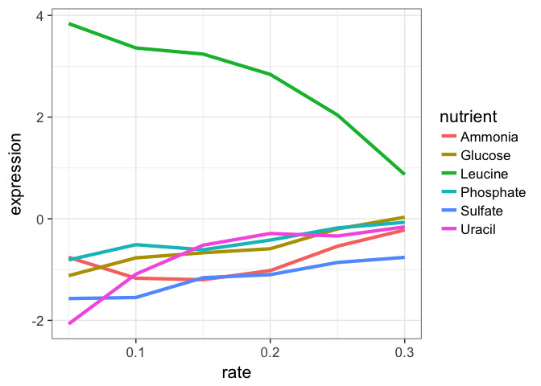
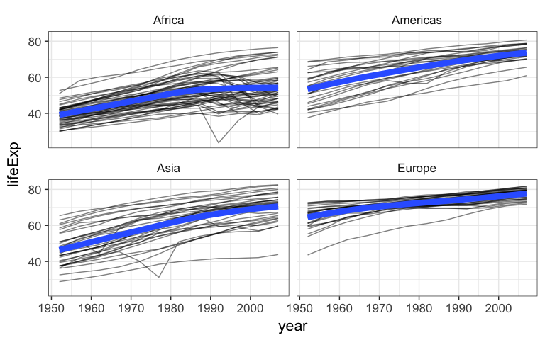
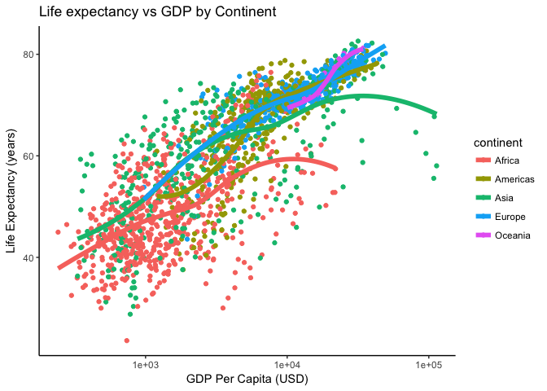

Introduction to Biomedical Data Science
(BIMS 8382)
Stephen D. Turner, Ph.D.
First Edition
February, 2016
- Syllabus
- R Setup Instructions
- R: The Basics
- Data Manipulation with dplyr
- Tidy Data and Advanced Data Manipulation
- Advanced Data Visualization with ggplot2
- Reproducible Reporting: Generating Dynamic Documents with R+RStudio
- Count-Based Differential Expression Analysis of RNA-seq Data
- Further Resources
This class introduces methods, tools, and software for reproducibly managing, manipulating, analyzing, and visualizing large-scale biomedical data. Specifically, the course introduces the R statistical computing environment and packages for manipulating and visualizing high-dimensional data, covers strategies for reproducible research, and culminates with analysis of data from a real RNA-seq experiment using R and Bioconductor packages.
This book is a PDF version of the online materials available at bioconnector.org/bims8382.
This work is licensed under a CC BY-NC-SA International License.
Attribution: Some of the course material and content layout here is modified in part from Jenny Bryan’s Stat 545 course, Software Carpentry, Data Carpentry, David Robinson’s blog, Marian Schmidt’s MSU NGS Workshop, and likely many others.
Syllabus
General Information
Lead Instructor: Stephen Turner, PhD
Co-instructor/TA: VP Nagraj
When:
Spring 2016 Module S1
Feb 15 - Mar 21, 2016
1:00pm - 4:00pm
Where: Carter Classroom, Health Sciences Library (downstairs one floor, to the right)
Textbook: Available online (free!): bioconnector.org/bims8382/textbook.pdf
Week 1: Introduction to R
This novice-level introduction is directed toward life scientists with little to no experience with statistical computing or bioinformatics. This interactive introduction will introduce the R statistical computing environment. The first part of this workshop will demonstrate very basic functionality in R, including functions, functions, vectors, creating variables, getting help, filtering, data frames, plotting, and reading/writing files.
Week 2: Advanced Data Manipulation with R
Data analysis involves a large amount of janitor work – munging and cleaning data to facilitate downstream data analysis. This session assumes a basic familiarity with R and covers tools and techniques for advanced data manipulation. It will cover data cleaning and “tidy data,” and will introduce R packages that enable data manipulation, analysis, and visualization using split-apply-combine strategies. Upon completing this lesson, students will be able to use the dplyr package in R to effectively manipulate and conditionally compute summary statistics over subsets of a “big” dataset containing many observations.
Week 3: Advanced Data Visualization with R and ggplot2
This session will cover fundamental concepts for creating effective data visualization and will introduce tools and techniques for visualizing large, high-dimensional data using R. We will review fundamental concepts for visually displaying quantitative information, such as using series of small multiples, avoiding “chart-junk,” and maximizing the data-ink ratio. After briefly covering data visualization using base R graphics, we will introduce the ggplot2 package for advanced high-dimensional visualization. We will cover the grammar of graphics (geoms, aesthetics, stats, and faceting), and using ggplot2 to create plots layer-by-layer. Upon completing this lesson, students will be able to use R to explore a high-dimensional dataset by faceting and scaling arbitrarily complex plots in small multiples.
Week 4: Reproducible Research & Dynamic Documents
Contemporary life sciences research is plagued by reproducibility issues. This session covers some of the barriers to reproducible research and how to start to address some of those problems during the data management and analysis phases of the research life cycle. In this session we will cover using R and dynamic document generation with RMarkdown and RStudio to weave together reporting text with executable R code to automatically generate reports in the form of PDF, Word, or HTML documents.
Weeks 5-6: Introduction to RNA-seq data analysis
This session will introduce both the Linux/UNIX operating system and a cloud computing environment, focusing on analyzing real data from a biological application - analyzing RNA-seq data for differentially expressed genes. The first part will introduce basic operation in a cloud-enabled UNIX environment, and will cover the first steps in an RNA-seq analysis including QC, alignment, and quantitation. The second part will cover differential gene expression analysis of the RNA-seq data using Bioconductor packages.
R Setup Instructions
Basic R Setup
Note: R and RStudio are separate downloads and installations. R is the underlying statistical computing environment, but using R alone is no fun. RStudio is a graphical integrated development environment that makes using R much easier. You need R installed before you install RStudio.
- Create a new folder somewhere on your computer that’s easy to get to (e.g., your Desktop). Name it
bims8382. Inside that folder, make a folder calleddata, all lowercase. - Download 8 datasets from bioconnector.org/data. Save these data files to
bims8382/data, that new folder you just made. Or just click these direct links: - Install R. You’ll need R version 3.1.2 or higher. Download and install R for Windows or Mac OS X (download the latest R-3.x.x.pkg file for your appropriate version of OS X).
- Install RStudio. Download and install the latest stable version of RStudio Desktop.
- Install R packages. Launch RStudio (RStudio, not R itself). Ensure that you have internet access, then enter the following commands into the Console panel (usually the lower-left panel, by default). A few notes:
- These commands are case-sensitive.
- You need to be connected to the internet to do this.
- Even if you’ve installed these packages in the past, go ahead and re-install the most recent version. Many of these packages are updated often. For instance, ggplot2 2.0 (released December 2015) came with many new features and changes.
- At any point (especially if you’ve used R/Bioconductor in the past), R may ask you if you want to update any old packages by asking
Update all/some/none? [a/s/n]:. If you see this, typeaat the propt and hitEnterto update any old packages. - If you see a note long the lines of “binary version available but the source version is later”, followed by a question, “Do you want to install from sources the package which needs compilation? y/n”, type
nfor no, and hit enter. - If you’re using a Windows machine you might get some errors about not having permission to modify the existing libraries – don’t worry about this message. You can avoid this error altogether by running RStudio as an administrator (right click the RStudio icon, then click “run as administrator”).
install.packages("dplyr")
install.packages("ggplot2")
install.packages("tidyr")
install.packages("readr")
install.packages("stringr")
install.packages("knitr")
install.packages("rmarkdown")You can check that you’ve installed everything correctly by closing and reopening RStudio and entering the following commands at the console window:
library(dplyr)
library(ggplot2)
library(tidyr)
library(readr)
library(stringr)
library(knitr)
library(rmarkdown)These commands may produce some notes or other output, but as long as they work without an error message, you’re good to go. If you get a message that says something like: Error in library(packageName) : there is no package called 'packageName', then the required packages did not install correctly. Please do not hesitate to email me prior to the course if you are still having difficulty.
Bioconductor
Additionally, you’ll need to install a few Bioconductor packages. These packages are installed differently than “regular” R packages from CRAN. Copy and paste these lines of code into your R console.
source("http://bioconductor.org/biocLite.R")
biocLite()
biocLite("DESeq2")You can check that you’ve installed everything correctly by closing and reopening RStudio and entering the following commands at the console window:
library(DESeq2)If you get a message that says something like: Error in library(packageName) : there is no package called 'packageName', then the required packages did not install correctly. Please do not hesitate to email me prior to the course if you are still having difficulty.
Additional steps for Reproducible Research classes
A few additional setup steps required for the reproducible research / dynamic documents class.
- First, launch RStudio (not R). Click File, New File, R Markdown. This may tell you that you need to install additional packages (knitr, yaml, htmltools, caTools, bitops, and rmarkdown). Click “Yes” to install these.
- Sign up for a free account at RPubs.com.
- If you want to convert to PDF, you will need to install a LaTeX typesetting engine. This differs on Mac and Windows. Note that this part of the installation may take up to several hours, and isn’t strictly required for the class.
- Windows LaTeX instructions:
- Download the installer using this link (or this link if you’re using an older 32-bit version of Windows). It is important to use the full installer, not the basic installer. Run the installer .exe that you downloaded.
- Run the installer twice, making sure to use the Complete, not Basic, installation:
- First, When prompted, select the box to “Download MiKTeX.” Select the closest mirror to your location. If you’re doing this from Charlottesville, the United States / JMU mirror is likely the closest. This may take a while.
- Run the installer again, but this time select “Install” instead of “Download.” When prompted “Install missing packages on-the-fly”, drag your selection up to “Yes.”
- Mac LaTeX instructions:
- Download the installer .pkg file using this link. This is a very large download (>2 gigabytes). It can take a while depending on your network speed.
- Run the installer package.
- Windows LaTeX instructions:
R: The Basics
This section introduces the R environment and some of the most basic funcionality aspects of R that are used through the remainder of the class. This section assumes little to no experience with statistical computing with R. We will introduce the R statistical computing environment, RStudio, and the dataset that we will work with for the remainder of the lesson. We will cover very basic functionality in R, including variables, functions, and importing/inspecting data frames.
Make sure you complete the setup here prior to the class.
RStudio
Let’s start by learning about RStudio. R is the underlying statistical computing environment, but using R alone is no fun. RStudio is a graphical integrated development environment that makes using R much easier.
- Panes in RStudio. There are four panes, and their orientation is configurable under “Tools – Global Options.” You don’t have to do it this way, but I usually set up my window to have:
- Editor in the top left
- Console top right
- Environment/history on the bottom left
- Plots/help on the bottom right.
- Projects: first, start a new project in a new folder somewhere easy to remember. When we start reading in data it’ll be important that the code and the data are in the same place. Creating a project creates an Rproj file that opens R running in that folder. This way, when you want to read in dataset whatever.txt, you just tell it the filename rather than a full path. This is critical for reproducibility, and we’ll talk about that more later.
- Code that you type into the console is code that R executes. From here forward we will use the editor window to write a script that we can save to a file and run it again whenever we want to. We usually give it a
.Rextension, but it’s just a plain text file. If you want to send commands from your editor to the console, useCMD+Enter(Ctrl+Enteron Windows). - Anything after a
#sign is a comment. Use them liberally to comment your code.
Basic operations
R can be used as a glorified calculator. Try typing this in directly into the console. Make sure you’re typing into into the editor, not the console, and save your script. Use the run button, or press CMD+Enter (Ctrl+Enter on Windows).
2+2
5*4
2^3R Knows order of operations and scientific notation.
2+3*4/(5+3)*15/2^2+3*4^2
5e4However, to do useful and interesting things, we need to assign values to objects. To create objects, we need to give it a name followed by the assignment operator <- and the value we want to give it:
weight_kg <- 55<- is the assignment operator. Assigns values on the right to objects on the left, it is like an arrow that points from the value to the object. Mostly similar to = but not always. Learn to use <- as it is good programming practice. Using = in place of <- can lead to issues down the line. The keyboard shortcut for inserting the <- operator is Alt-dash.
Objects can be given any name such as x, current_temperature, or subject_id. You want your object names to be explicit and not too long. They cannot start with a number (2x is not valid but x2 is). R is case sensitive (e.g., weight_kg is different from Weight_kg). There are some names that cannot be used because they represent the names of fundamental functions in R (e.g., if, else, for, see here for a complete list). In general, even if it’s allowed, it’s best to not use other function names, which we’ll get into shortly (e.g., c, T, mean, data, df, weights). In doubt check the help to see if the name is already in use. It’s also best to avoid dots (.) within a variable name as in my.dataset. It is also recommended to use nouns for variable names, and verbs for function names.
When assigning a value to an object, R does not print anything. You can force to print the value by typing the name:
weight_kgNow that R has weight_kg in memory, we can do arithmetic with it. For instance, we may want to convert this weight in pounds (weight in pounds is 2.2 times the weight in kg).
2.2 * weight_kgWe can also change a variable’s value by assigning it a new one:
weight_kg <- 57.5
2.2 * weight_kgThis means that assigning a value to one variable does not change the values of other variables. For example, let’s store the animal’s weight in pounds in a variable.
weight_lb <- 2.2 * weight_kgand then change weight_kg to 100.
weight_kg <- 100What do you think is the current content of the object weight_lb? 126.5 or 220?
You can see what objects (variables) are stored by viewing the Environment tab in Rstudio. You can also use the ls() function. You can remove objects (variables) with the rm() function. You can do this one at a time or remove several objects at once. You can also use the little broom button in your environment pane to remove everything from your environment.
ls()
rm(weight_lb, weight_kg)
ls()
weight_lb # oops! you should get an error because weight_lb no longer exists!EXERCISE 1
What are the values after each statement in the following?
mass <- 50 # mass?
age <- 30 # age?
mass <- mass * 2 # mass?
age <- age - 10 # age?
mass_index <- mass/age # massIndex?Functions
R has built-in functions.
# Notice that this is a comment.
# Anything behind a # is "commented out" and is not run.
sqrt(144)
log(1000)Get help by typing a question mark in front of the function’s name, or help(functionname):
help(log)
?logNote syntax highlighting when typing this into the editor. Also note how we pass arguments to functions. The base= part inside the parentheses is called an argument, and most functions use arguments. Arguments modify the behavior of the function. Functions some input (e.g., some data, an object) and other options to change what the function will return, or how to treat the data provided. Finally, see how you can next one function inside of another (here taking the square root of the log-base-10 of 1000).
log(1000)
log(1000, base=10)
log(1000, 10)
sqrt(log(1000, base=10))EXERCISE 2
See ?abs and calculate the square root of the log-base-10 of the absolute value of -4*(2550-50). Answer should be 2.
Data Frames
There are lots of different basic data structures in R. If you take any kind of longer introduction to R you’ll probably learn about arrays, lists, matrices, etc. We are going to skip straight to the data structure you’ll probably use most – the data frame. We use data frames to store heterogeneous tabular data in R: tabular, meaning that individuals or observations are typically represented in rows, while variables or features are represented as columns; heterogeneous, meaning that columns/features/variables can be different classes (on variable, e.g. age, can be numeric, while another, e.g., cause of death, can be text).
Data Manipulation with dplyr
Data analysis involves a large amount of janitor work – munging and cleaning data to facilitate downstream data analysis. This lesson demonstrates techniques for advanced data manipulation and analysis with the split-apply-combine strategy. We will use the dplyr package in R to effectively manipulate and conditionally compute summary statistics over subsets of a “big” dataset containing many observations.
This lesson assumes a basic familiarity with R and data frames.
Review
Our data
We’re going to use the yeast gene expression dataset described on the data frames lesson. This is a cleaned up version of a gene expression dataset from Brauer et al. Coordination of Growth Rate, Cell Cycle, Stress Response, and Metabolic Activity in Yeast (2008) Mol Biol Cell 19:352-367. This data is from a gene expression microarray, and in this paper the authors are examining the relationship between growth rate and gene expression in yeast cultures limited by one of six different nutrients (glucose, leucine, ammonium, sulfate, phosphate, uracil). If you give yeast a rich media loaded with nutrients except restrict the supply of a single nutrient, you can control the growth rate to any rate you choose. By starving yeast of specific nutrients you can find genes that:
- Raise or lower their expression in response to growth rate. Growth-rate dependent expression patterns can tell us a lot about cell cycle control, and how the cell responds to stress. The authors found that expression of >25% of all yeast genes is linearly correlated with growth rate, independent of the limiting nutrient. They also found that the subset of negatively growth-correlated genes is enriched for peroxisomal functions, and positively correlated genes mainly encode ribosomal functions.
- Respond differently when different nutrients are being limited. If you see particular genes that respond very differently when a nutrient is sharply restricted, these genes might be involved in the transport or metabolism of that specific nutrient.
You can download the cleaned up version of the data at bioconnector.org/data. The file is called brauer2007_tidy.csv. Later on we’ll actually start with the original raw data (minimally processed) and manipulate it so that we can make it more amenable for analysis.
Reading in data
We need to load both the dplyr and readr packages for efficiently reading in and displaying this data. We’re also going to use many other functions from the dplyr package. Make sure you have these packages installed as described on the setup page.
# Load packages
library(readr)
library(dplyr)
# Read in data
ydat <- read_csv(file="data/brauer2007_tidy.csv")
# Display the data
ydat
# Optionally, bring up the data in a viewer window
# View(ydat)## Source: local data frame [198,430 x 7]
##
## symbol systematic_name nutrient rate expression
## (chr) (chr) (chr) (dbl) (dbl)
## 1 SFB2 YNL049C Glucose 0.05 -0.24
## 2 NA YNL095C Glucose 0.05 0.28
## 3 QRI7 YDL104C Glucose 0.05 -0.02
## 4 CFT2 YLR115W Glucose 0.05 -0.33
## 5 SSO2 YMR183C Glucose 0.05 0.05
## 6 PSP2 YML017W Glucose 0.05 -0.69
## 7 RIB2 YOL066C Glucose 0.05 -0.55
## 8 VMA13 YPR036W Glucose 0.05 -0.75
## 9 EDC3 YEL015W Glucose 0.05 -0.24
## 10 VPS5 YOR069W Glucose 0.05 -0.16
## .. ... ... ... ... ...
## Variables not shown: bp (chr), mf (chr)The dplyr package
The dplyr package is a relatively new R package that makes data manipulation fast and easy. It imports functionality from another package called magrittr that allows you to chain commands together into a pipeline that will completely change the way you write R code such that you’re writing code the way you’re thinking about the problem.
When you read in data with the readr package (read_csv()) and you had the dplyr package loaded already, the data frame takes on this “special” class of data frames called a tbl, which you can see with class(ydat). If you have other “regular” data frames in your workspace, the tbl_df() function will convert it into the special dplyr tbl that displays nicely (e.g.: iris <- tbl_df(iris)). You don’t have to turn all your data frame objects into tbl_df objects, but it does make working with large datasets a bit easier.
dplyr verbs
The dplyr package gives you a handful of useful verbs for managing data. On their own they don’t do anything that base R can’t do. Here are some of the single-table verbs we’ll be working with in this lesson (single-table meaning that they only work on a single table – contrast that to two-table verbs used for joining data together, which we’ll cover in a later lesson).
filter()select()mutate()arrange()summarize()group_by()
They all take a data.frame or tbl_df as their input for the first argument, and they all return a data.frame or tbl_df as output.
filter()
If you want to filter rows of the data where some condition is true, use the filter() function.
- The first argument is the data frame you want to filter, e.g.
filter(mydata, .... - The second argument is a condition you must satisfy, e.g.
filter(ydat, symbol == "LEU1"). If you want to satisfy all of multiple conditions, you can use the “and” operator,&. The “or” operator|(the pipe character, usually shift-backslash) will return a subset that meet any of the conditions.
==: Equal to!=: Not equal to>,>=: Greater than, greater than or equal to<,<=: Less than, less than or equal to
Let’s try it out. For this to work you have to have already loaded the dplyr package. Let’s take a look at LEU1, a gene involved in leucine synthesis.
# First, make sure you've loaded the dplyr package
library(dplyr)
# Look at a single gene involved in leucine synthesis pathway
filter(ydat, symbol == "LEU1")## Source: local data frame [36 x 7]
##
## symbol systematic_name nutrient rate expression bp
## (chr) (chr) (chr) (dbl) (dbl) (chr)
## 1 LEU1 YGL009C Glucose 0.05 -1.12 leucine biosynthesis
## 2 LEU1 YGL009C Glucose 0.10 -0.77 leucine biosynthesis
## 3 LEU1 YGL009C Glucose 0.15 -0.67 leucine biosynthesis
## 4 LEU1 YGL009C Glucose 0.20 -0.59 leucine biosynthesis
## 5 LEU1 YGL009C Glucose 0.25 -0.20 leucine biosynthesis
## 6 LEU1 YGL009C Glucose 0.30 0.03 leucine biosynthesis
## 7 LEU1 YGL009C Ammonia 0.05 -0.76 leucine biosynthesis
## 8 LEU1 YGL009C Ammonia 0.10 -1.17 leucine biosynthesis
## 9 LEU1 YGL009C Ammonia 0.15 -1.20 leucine biosynthesis
## 10 LEU1 YGL009C Ammonia 0.20 -1.02 leucine biosynthesis
## .. ... ... ... ... ... ...
## Variables not shown: mf (chr)# Optionally, bring that result up in a View window
# View(filter(ydat, symbol == "LEU1"))
# Look at multiple genes
filter(ydat, symbol=="LEU1" | symbol=="ADH2")## Source: local data frame [72 x 7]
##
## symbol systematic_name nutrient rate expression bp
## (chr) (chr) (chr) (dbl) (dbl) (chr)
## 1 LEU1 YGL009C Glucose 0.05 -1.12 leucine biosynthesis
## 2 ADH2 YMR303C Glucose 0.05 6.28 fermentation*
## 3 LEU1 YGL009C Glucose 0.10 -0.77 leucine biosynthesis
## 4 ADH2 YMR303C Glucose 0.10 5.81 fermentation*
## 5 LEU1 YGL009C Glucose 0.15 -0.67 leucine biosynthesis
## 6 ADH2 YMR303C Glucose 0.15 5.64 fermentation*
## 7 LEU1 YGL009C Glucose 0.20 -0.59 leucine biosynthesis
## 8 ADH2 YMR303C Glucose 0.20 5.10 fermentation*
## 9 LEU1 YGL009C Glucose 0.25 -0.20 leucine biosynthesis
## 10 ADH2 YMR303C Glucose 0.25 1.89 fermentation*
## .. ... ... ... ... ... ...
## Variables not shown: mf (chr)# Look at LEU1 expression at a low growth rate due to nutrient depletion
# Notice how LEU1 is highly upregulated when leucine is depleted!
filter(ydat, symbol=="LEU1" & rate==.05)## Source: local data frame [6 x 7]
##
## symbol systematic_name nutrient rate expression bp
## (chr) (chr) (chr) (dbl) (dbl) (chr)
## 1 LEU1 YGL009C Glucose 0.05 -1.12 leucine biosynthesis
## 2 LEU1 YGL009C Ammonia 0.05 -0.76 leucine biosynthesis
## 3 LEU1 YGL009C Phosphate 0.05 -0.81 leucine biosynthesis
## 4 LEU1 YGL009C Sulfate 0.05 -1.57 leucine biosynthesis
## 5 LEU1 YGL009C Leucine 0.05 3.84 leucine biosynthesis
## 6 LEU1 YGL009C Uracil 0.05 -2.07 leucine biosynthesis
## Variables not shown: mf (chr)# But expression goes back down when the growth/nutrient restriction is relaxed
filter(ydat, symbol=="LEU1" & rate==.3)## Source: local data frame [6 x 7]
##
## symbol systematic_name nutrient rate expression bp
## (chr) (chr) (chr) (dbl) (dbl) (chr)
## 1 LEU1 YGL009C Glucose 0.3 0.03 leucine biosynthesis
## 2 LEU1 YGL009C Ammonia 0.3 -0.22 leucine biosynthesis
## 3 LEU1 YGL009C Phosphate 0.3 -0.07 leucine biosynthesis
## 4 LEU1 YGL009C Sulfate 0.3 -0.76 leucine biosynthesis
## 5 LEU1 YGL009C Leucine 0.3 0.87 leucine biosynthesis
## 6 LEU1 YGL009C Uracil 0.3 -0.16 leucine biosynthesis
## Variables not shown: mf (chr)# Show only stats for LEU1 and Leucine depletion.
# LEU1 expression starts off high and drops
filter(ydat, symbol=="LEU1" & nutrient=="Leucine")## Source: local data frame [6 x 7]
##
## symbol systematic_name nutrient rate expression bp
## (chr) (chr) (chr) (dbl) (dbl) (chr)
## 1 LEU1 YGL009C Leucine 0.05 3.84 leucine biosynthesis
## 2 LEU1 YGL009C Leucine 0.10 3.36 leucine biosynthesis
## 3 LEU1 YGL009C Leucine 0.15 3.24 leucine biosynthesis
## 4 LEU1 YGL009C Leucine 0.20 2.84 leucine biosynthesis
## 5 LEU1 YGL009C Leucine 0.25 2.04 leucine biosynthesis
## 6 LEU1 YGL009C Leucine 0.30 0.87 leucine biosynthesis
## Variables not shown: mf (chr)# What about LEU1 expression with other nutrients being depleted?
filter(ydat, symbol=="LEU1" & nutrient=="Glucose")## Source: local data frame [6 x 7]
##
## symbol systematic_name nutrient rate expression bp
## (chr) (chr) (chr) (dbl) (dbl) (chr)
## 1 LEU1 YGL009C Glucose 0.05 -1.12 leucine biosynthesis
## 2 LEU1 YGL009C Glucose 0.10 -0.77 leucine biosynthesis
## 3 LEU1 YGL009C Glucose 0.15 -0.67 leucine biosynthesis
## 4 LEU1 YGL009C Glucose 0.20 -0.59 leucine biosynthesis
## 5 LEU1 YGL009C Glucose 0.25 -0.20 leucine biosynthesis
## 6 LEU1 YGL009C Glucose 0.30 0.03 leucine biosynthesis
## Variables not shown: mf (chr)Let’s look at this graphically. Don’t worry about what these commands are doing just yet - we’ll cover that later on when we talk about ggplot2. Here’s I’m taking the filtered dataset containing just expression estimates for LEU1 where I have 36 rows (one for each of 6 nutrients \(\times\) 6 growth rates), and I’m piping that dataset to the plotting function, where I’m plotting rate on the x-axis, expression on the y-axis, mapping the value of nutrient to the color, and using a line plot to display the data.
library(ggplot2)
filter(ydat, symbol=="LEU1") %>%
ggplot(aes(rate, expression, colour=nutrient)) + geom_line(lwd=1.5)
Look closely at that! LEU1 is highly expressed when starved of leucine because the cell has to synthesize its own! And as the amount of leucine in the environment (the growth rate) increases, the cell can worry less about synthesizing leucine, so LEU1 expression goes back down. Consequently the cell can devote more energy into other functions, and we see other genes’ expression very slightly raising.
EXERCISE 1
- Display the data where the gene ontology biological process (the
bpvariable) is “leucine biosynthesis” (case-sensitive) and the limiting nutrient was Leucine. (Answer should return a 24-by-7 data frame – 4 genes \(\times\) 6 growth rates). - Gene/rate combinations had high expression (in the top 1% of expressed genes)? Hint: see
?quantileand tryquantile(ydat$expression, probs=.99)to see the expression value which is higher than 99% of all the data, thenfilter()based on that. Try wrapping your answer with aView()function so you can see the whole thing. What does it look like those genes are doing? Answer should return a 1971-by-7 data frame.
select()
The filter() function allows you to return only certain rows matching a condition. The select() function returns only certain columns. The first argument is the data, and subsequent arguments are the columns you want.
# Select just the symbol and systematic_name
select(ydat, symbol, systematic_name)## Source: local data frame [198,430 x 2]
##
## symbol systematic_name
## (chr) (chr)
## 1 SFB2 YNL049C
## 2 NA YNL095C
## 3 QRI7 YDL104C
## 4 CFT2 YLR115W
## 5 SSO2 YMR183C
## 6 PSP2 YML017W
## 7 RIB2 YOL066C
## 8 VMA13 YPR036W
## 9 EDC3 YEL015W
## 10 VPS5 YOR069W
## .. ... ...# Alternatively, just remove columns. Remove the bp and mf columns.
select(ydat, -bp, -mf)## Source: local data frame [198,430 x 5]
##
## symbol systematic_name nutrient rate expression
## (chr) (chr) (chr) (dbl) (dbl)
## 1 SFB2 YNL049C Glucose 0.05 -0.24
## 2 NA YNL095C Glucose 0.05 0.28
## 3 QRI7 YDL104C Glucose 0.05 -0.02
## 4 CFT2 YLR115W Glucose 0.05 -0.33
## 5 SSO2 YMR183C Glucose 0.05 0.05
## 6 PSP2 YML017W Glucose 0.05 -0.69
## 7 RIB2 YOL066C Glucose 0.05 -0.55
## 8 VMA13 YPR036W Glucose 0.05 -0.75
## 9 EDC3 YEL015W Glucose 0.05 -0.24
## 10 VPS5 YOR069W Glucose 0.05 -0.16
## .. ... ... ... ... ...# Notice that the original data doesn't change!
ydat## Source: local data frame [198,430 x 7]
##
## symbol systematic_name nutrient rate expression
## (chr) (chr) (chr) (dbl) (dbl)
## 1 SFB2 YNL049C Glucose 0.05 -0.24
## 2 NA YNL095C Glucose 0.05 0.28
## 3 QRI7 YDL104C Glucose 0.05 -0.02
## 4 CFT2 YLR115W Glucose 0.05 -0.33
## 5 SSO2 YMR183C Glucose 0.05 0.05
## 6 PSP2 YML017W Glucose 0.05 -0.69
## 7 RIB2 YOL066C Glucose 0.05 -0.55
## 8 VMA13 YPR036W Glucose 0.05 -0.75
## 9 EDC3 YEL015W Glucose 0.05 -0.24
## 10 VPS5 YOR069W Glucose 0.05 -0.16
## .. ... ... ... ... ...
## Variables not shown: bp (chr), mf (chr)Notice above how the original data doesn’t change. We’re selecting out only certain columns of interest and throwing away columns we don’t care about. If we wanted to keep this data, we would need to reassign the result of the select() operation to a new object. Let’s make a new object called nogo that does not contain the GO annotations. Notice again how the original data is unchanged.
# create a new dataset without the go annotations.
nogo <- select(ydat, -bp, -mf)
nogo## Source: local data frame [198,430 x 5]
##
## symbol systematic_name nutrient rate expression
## (chr) (chr) (chr) (dbl) (dbl)
## 1 SFB2 YNL049C Glucose 0.05 -0.24
## 2 NA YNL095C Glucose 0.05 0.28
## 3 QRI7 YDL104C Glucose 0.05 -0.02
## 4 CFT2 YLR115W Glucose 0.05 -0.33
## 5 SSO2 YMR183C Glucose 0.05 0.05
## 6 PSP2 YML017W Glucose 0.05 -0.69
## 7 RIB2 YOL066C Glucose 0.05 -0.55
## 8 VMA13 YPR036W Glucose 0.05 -0.75
## 9 EDC3 YEL015W Glucose 0.05 -0.24
## 10 VPS5 YOR069W Glucose 0.05 -0.16
## .. ... ... ... ... ...# we could filter this new dataset
filter(nogo, symbol=="LEU1" & rate==.05)## Source: local data frame [6 x 5]
##
## symbol systematic_name nutrient rate expression
## (chr) (chr) (chr) (dbl) (dbl)
## 1 LEU1 YGL009C Glucose 0.05 -1.12
## 2 LEU1 YGL009C Ammonia 0.05 -0.76
## 3 LEU1 YGL009C Phosphate 0.05 -0.81
## 4 LEU1 YGL009C Sulfate 0.05 -1.57
## 5 LEU1 YGL009C Leucine 0.05 3.84
## 6 LEU1 YGL009C Uracil 0.05 -2.07# Notice how the original data is unchanged - still have all 7 columns
ydat## Source: local data frame [198,430 x 7]
##
## symbol systematic_name nutrient rate expression
## (chr) (chr) (chr) (dbl) (dbl)
## 1 SFB2 YNL049C Glucose 0.05 -0.24
## 2 NA YNL095C Glucose 0.05 0.28
## 3 QRI7 YDL104C Glucose 0.05 -0.02
## 4 CFT2 YLR115W Glucose 0.05 -0.33
## 5 SSO2 YMR183C Glucose 0.05 0.05
## 6 PSP2 YML017W Glucose 0.05 -0.69
## 7 RIB2 YOL066C Glucose 0.05 -0.55
## 8 VMA13 YPR036W Glucose 0.05 -0.75
## 9 EDC3 YEL015W Glucose 0.05 -0.24
## 10 VPS5 YOR069W Glucose 0.05 -0.16
## .. ... ... ... ... ...
## Variables not shown: bp (chr), mf (chr)mutate()
The mutate() function adds new columns to the data. Remember, it doesn’t actually modify the data frame you’re operating on, and the result is transient unless you assign it to a new object or reassign it back to itself (generally, not always a good practice).
The expression level reported here is the \(log_2\) of the sample signal divided by the signal in the reference channel, where the reference RNA for all samples was taken from the glucose-limited chemostat grown at a dilution rate of 0.25 \(h^{-1}\). Let’s mutate this data to add a new variable called “signal” that’s the actual raw signal ratio instead of the log-transformed signal.
mutate(nogo, signal=2^expression)Mutate has a nice little feature too in that it’s “lazy.” You can mutate and add one variable, then continue mutating to add more variables based on that variable. Let’s make another column that’s the square root of the signal ratio.
mutate(nogo, signal=2^expression, sigsr=sqrt(signal))## Source: local data frame [198,430 x 7]
##
## symbol systematic_name nutrient rate expression signal sigsr
## (chr) (chr) (chr) (dbl) (dbl) (dbl) (dbl)
## 1 SFB2 YNL049C Glucose 0.05 -0.24 0.8467453 0.9201877
## 2 NA YNL095C Glucose 0.05 0.28 1.2141949 1.1019051
## 3 QRI7 YDL104C Glucose 0.05 -0.02 0.9862327 0.9930925
## 4 CFT2 YLR115W Glucose 0.05 -0.33 0.7955365 0.8919285
## 5 SSO2 YMR183C Glucose 0.05 0.05 1.0352649 1.0174797
## 6 PSP2 YML017W Glucose 0.05 -0.69 0.6198538 0.7873080
## 7 RIB2 YOL066C Glucose 0.05 -0.55 0.6830201 0.8264503
## 8 VMA13 YPR036W Glucose 0.05 -0.75 0.5946036 0.7711054
## 9 EDC3 YEL015W Glucose 0.05 -0.24 0.8467453 0.9201877
## 10 VPS5 YOR069W Glucose 0.05 -0.16 0.8950251 0.9460576
## .. ... ... ... ... ... ... ...Again, don’t worry about the code here to make the plot – we’ll learn about this later. Why do you think we log-transform the data prior to analysis?
library(tidyr)
mutate(nogo, signal=2^expression, sigsr=sqrt(signal)) %>%
gather(unit, value, expression:sigsr) %>%
ggplot(aes(value)) + geom_histogram(bins=100) + facet_wrap(~unit, scales="free")
### arrange()
The arrange() function does what it sounds like. It takes a data frame or tbl and arranges (or sorts) by column(s) of interest. The first argument is the data, and subsequent arguments are columns to sort on. Use the desc() function to arrange by descending.
# arrange by gene symbol
arrange(ydat, symbol)## Source: local data frame [198,430 x 7]
##
## symbol systematic_name nutrient rate expression bp
## (chr) (chr) (chr) (dbl) (dbl) (chr)
## 1 AAC1 YMR056C Glucose 0.05 1.50 aerobic respiration*
## 2 AAC1 YMR056C Glucose 0.10 1.54 aerobic respiration*
## 3 AAC1 YMR056C Glucose 0.15 1.16 aerobic respiration*
## 4 AAC1 YMR056C Glucose 0.20 1.04 aerobic respiration*
## 5 AAC1 YMR056C Glucose 0.25 0.84 aerobic respiration*
## 6 AAC1 YMR056C Glucose 0.30 0.01 aerobic respiration*
## 7 AAC1 YMR056C Ammonia 0.05 0.80 aerobic respiration*
## 8 AAC1 YMR056C Ammonia 0.10 1.47 aerobic respiration*
## 9 AAC1 YMR056C Ammonia 0.15 0.97 aerobic respiration*
## 10 AAC1 YMR056C Ammonia 0.20 0.76 aerobic respiration*
## .. ... ... ... ... ... ...
## Variables not shown: mf (chr)# arrange by expression (default: increasing)
arrange(ydat, expression)## Source: local data frame [198,430 x 7]
##
## symbol systematic_name nutrient rate expression
## (chr) (chr) (chr) (dbl) (dbl)
## 1 SUL1 YBR294W Phosphate 0.05 -6.50
## 2 SUL1 YBR294W Phosphate 0.10 -6.34
## 3 ADH2 YMR303C Phosphate 0.10 -6.15
## 4 ADH2 YMR303C Phosphate 0.30 -6.04
## 5 ADH2 YMR303C Phosphate 0.25 -5.89
## 6 SUL1 YBR294W Uracil 0.05 -5.55
## 7 SFC1 YJR095W Phosphate 0.20 -5.52
## 8 JEN1 YKL217W Phosphate 0.30 -5.44
## 9 MHT1 YLL062C Phosphate 0.05 -5.36
## 10 SFC1 YJR095W Phosphate 0.25 -5.35
## .. ... ... ... ... ...
## Variables not shown: bp (chr), mf (chr)# arrange by decreasing expression
arrange(ydat, desc(expression))## Source: local data frame [198,430 x 7]
##
## symbol systematic_name nutrient rate expression
## (chr) (chr) (chr) (dbl) (dbl)
## 1 GAP1 YKR039W Ammonia 0.05 6.64
## 2 DAL5 YJR152W Ammonia 0.05 6.64
## 3 GAP1 YKR039W Ammonia 0.10 6.64
## 4 DAL5 YJR152W Ammonia 0.10 6.64
## 5 DAL5 YJR152W Ammonia 0.15 6.64
## 6 DAL5 YJR152W Ammonia 0.20 6.64
## 7 DAL5 YJR152W Ammonia 0.25 6.64
## 8 DAL5 YJR152W Ammonia 0.30 6.64
## 9 GIT1 YCR098C Phosphate 0.05 6.64
## 10 PHM6 YDR281C Phosphate 0.05 6.64
## .. ... ... ... ... ...
## Variables not shown: bp (chr), mf (chr)EXERCISE 2
- First, re-run the command you used above to filter the data for genes involved in the “leucine biosynthesis” biological process and where the limiting nutrient is Leucine.
- Wrap this entire filtered result with a call to
arrange()where you’ll arrange the result of #1 by the gene symbol. - Wrap this entire result in a
View()statement so you can see the entire result.
summarize()
The summarize() function summarizes multiple values to a single value. On its own the summarize() function doesn’t seem to be all that useful. The dplyr package provides a few convenience functions called n() and n_distinct() that tell you the number of observations or the number of distinct values of a particular variable.
Notice that summarize takes a data frame and returns a data frame. In this case it’s a 1x1 data frame with a single row and a single column. The name of the column, by default is whatever the expression was used to summarize the data. This usually isn’t pretty, and if we wanted to work with this resulting data frame later on, we’d want to name that returned value something easier to deal with.
# Get the mean expression for all genes
summarize(ydat, mean(expression))## Source: local data frame [1 x 1]
##
## mean(expression)
## (dbl)
## 1 0.003367182# Use a more friendly name, e.g., meanexp, or whatever you want to call it.
summarize(ydat, meanexp=mean(expression))## Source: local data frame [1 x 1]
##
## meanexp
## (dbl)
## 1 0.003367182# Measure the correlation between rate and expression
summarize(ydat, r=cor(rate, expression))## Source: local data frame [1 x 1]
##
## r
## (dbl)
## 1 -0.02197312# Get the number of observations
summarize(ydat, n())## Source: local data frame [1 x 1]
##
## n()
## (int)
## 1 198430# The number of distinct gene symbols in the data
summarize(ydat, n_distinct(symbol))## Source: local data frame [1 x 1]
##
## n_distinct(symbol)
## (int)
## 1 4211group_by()
We saw that summarize() isn’t that useful on its own. Neither is group_by() All this does is takes an existing data frame and coverts it into a grouped data frame where operations are performed by group.
ydat## Source: local data frame [198,430 x 7]
##
## symbol systematic_name nutrient rate expression
## (chr) (chr) (chr) (dbl) (dbl)
## 1 SFB2 YNL049C Glucose 0.05 -0.24
## 2 NA YNL095C Glucose 0.05 0.28
## 3 QRI7 YDL104C Glucose 0.05 -0.02
## 4 CFT2 YLR115W Glucose 0.05 -0.33
## 5 SSO2 YMR183C Glucose 0.05 0.05
## 6 PSP2 YML017W Glucose 0.05 -0.69
## 7 RIB2 YOL066C Glucose 0.05 -0.55
## 8 VMA13 YPR036W Glucose 0.05 -0.75
## 9 EDC3 YEL015W Glucose 0.05 -0.24
## 10 VPS5 YOR069W Glucose 0.05 -0.16
## .. ... ... ... ... ...
## Variables not shown: bp (chr), mf (chr)group_by(ydat, nutrient)## Source: local data frame [198,430 x 7]
## Groups: nutrient [6]
##
## symbol systematic_name nutrient rate expression
## (chr) (chr) (chr) (dbl) (dbl)
## 1 SFB2 YNL049C Glucose 0.05 -0.24
## 2 NA YNL095C Glucose 0.05 0.28
## 3 QRI7 YDL104C Glucose 0.05 -0.02
## 4 CFT2 YLR115W Glucose 0.05 -0.33
## 5 SSO2 YMR183C Glucose 0.05 0.05
## 6 PSP2 YML017W Glucose 0.05 -0.69
## 7 RIB2 YOL066C Glucose 0.05 -0.55
## 8 VMA13 YPR036W Glucose 0.05 -0.75
## 9 EDC3 YEL015W Glucose 0.05 -0.24
## 10 VPS5 YOR069W Glucose 0.05 -0.16
## .. ... ... ... ... ...
## Variables not shown: bp (chr), mf (chr)group_by(ydat, nutrient, rate)## Source: local data frame [198,430 x 7]
## Groups: nutrient, rate [36]
##
## symbol systematic_name nutrient rate expression
## (chr) (chr) (chr) (dbl) (dbl)
## 1 SFB2 YNL049C Glucose 0.05 -0.24
## 2 NA YNL095C Glucose 0.05 0.28
## 3 QRI7 YDL104C Glucose 0.05 -0.02
## 4 CFT2 YLR115W Glucose 0.05 -0.33
## 5 SSO2 YMR183C Glucose 0.05 0.05
## 6 PSP2 YML017W Glucose 0.05 -0.69
## 7 RIB2 YOL066C Glucose 0.05 -0.55
## 8 VMA13 YPR036W Glucose 0.05 -0.75
## 9 EDC3 YEL015W Glucose 0.05 -0.24
## 10 VPS5 YOR069W Glucose 0.05 -0.16
## .. ... ... ... ... ...
## Variables not shown: bp (chr), mf (chr)The real power comes in where group_by() and summarize() are used together. First, write the group_by() statement. Then wrap the result of that with a call to summarize().
# Get the mean expression for each gene
# group_by(ydat, symbol)
summarize(group_by(ydat, symbol), meanexp=mean(expression))## Source: local data frame [4,211 x 2]
##
## symbol meanexp
## (chr) (dbl)
## 1 AAC1 0.528888889
## 2 AAC3 -0.216285714
## 3 AAD10 0.438333333
## 4 AAD14 -0.071666667
## 5 AAD16 0.241944444
## 6 AAD4 -0.791666667
## 7 AAD6 0.290277778
## 8 AAH1 0.046111111
## 9 AAP1 -0.003611111
## 10 AAP1' -0.421388889
## .. ... ...# Get the correlation between rate and expression for each nutrient
# group_by(ydat, nutrient)
summarize(group_by(ydat, nutrient), r=cor(rate, expression))## Source: local data frame [6 x 2]
##
## nutrient r
## (chr) (dbl)
## 1 Ammonia -0.01752025
## 2 Glucose -0.01119529
## 3 Leucine -0.03837677
## 4 Phosphate -0.01935061
## 5 Sulfate -0.01664016
## 6 Uracil -0.03534036The almighty pipe: %>%
How the pipe works
This is where things get awesome. The dplyr package imports functionality from the magrittr package that lets you pipe the output of one function to the input of another, so you can avoid nesting functions. It looks like this: %>%. You don’t have to load the magrittr package to use it since dplyr imports its functionality when you load the dplyr package.
Here’s the simplest way to use it. Remember the tail() function. It expects a data frame as input, and the next argument is the number of lines to print. These two commands are identical:
tail(ydat, 5)## Source: local data frame [5 x 7]
##
## symbol systematic_name nutrient rate expression
## (chr) (chr) (chr) (dbl) (dbl)
## 1 KRE1 YNL322C Uracil 0.3 0.28
## 2 MTL1 YGR023W Uracil 0.3 0.27
## 3 KRE9 YJL174W Uracil 0.3 0.43
## 4 UTH1 YKR042W Uracil 0.3 0.19
## 5 NA YOL111C Uracil 0.3 0.04
## Variables not shown: bp (chr), mf (chr)ydat %>% tail(5)## Source: local data frame [5 x 7]
##
## symbol systematic_name nutrient rate expression
## (chr) (chr) (chr) (dbl) (dbl)
## 1 KRE1 YNL322C Uracil 0.3 0.28
## 2 MTL1 YGR023W Uracil 0.3 0.27
## 3 KRE9 YJL174W Uracil 0.3 0.43
## 4 UTH1 YKR042W Uracil 0.3 0.19
## 5 NA YOL111C Uracil 0.3 0.04
## Variables not shown: bp (chr), mf (chr)Let’s use one of the dplyr verbs.
filter(ydat, nutrient=="Leucine")## Source: local data frame [33,178 x 7]
##
## symbol systematic_name nutrient rate expression
## (chr) (chr) (chr) (dbl) (dbl)
## 1 SFB2 YNL049C Leucine 0.05 0.18
## 2 NA YNL095C Leucine 0.05 0.16
## 3 QRI7 YDL104C Leucine 0.05 -0.30
## 4 CFT2 YLR115W Leucine 0.05 -0.27
## 5 SSO2 YMR183C Leucine 0.05 -0.59
## 6 PSP2 YML017W Leucine 0.05 -0.17
## 7 RIB2 YOL066C Leucine 0.05 -0.02
## 8 VMA13 YPR036W Leucine 0.05 -0.11
## 9 EDC3 YEL015W Leucine 0.05 0.12
## 10 VPS5 YOR069W Leucine 0.05 -0.20
## .. ... ... ... ... ...
## Variables not shown: bp (chr), mf (chr)ydat %>% filter(nutrient=="Leucine")## Source: local data frame [33,178 x 7]
##
## symbol systematic_name nutrient rate expression
## (chr) (chr) (chr) (dbl) (dbl)
## 1 SFB2 YNL049C Leucine 0.05 0.18
## 2 NA YNL095C Leucine 0.05 0.16
## 3 QRI7 YDL104C Leucine 0.05 -0.30
## 4 CFT2 YLR115W Leucine 0.05 -0.27
## 5 SSO2 YMR183C Leucine 0.05 -0.59
## 6 PSP2 YML017W Leucine 0.05 -0.17
## 7 RIB2 YOL066C Leucine 0.05 -0.02
## 8 VMA13 YPR036W Leucine 0.05 -0.11
## 9 EDC3 YEL015W Leucine 0.05 0.12
## 10 VPS5 YOR069W Leucine 0.05 -0.20
## .. ... ... ... ... ...
## Variables not shown: bp (chr), mf (chr)Nesting versus piping
So what?
Now, think about this for a minute. What if we wanted to get the correlation between the growth rate and expression separately for each limiting nutrient only for genes in the leucine biosynthesis pathway, and return a sorted list of those correlation coeffients rounded to two digits? Mentally we would do something like this:
- Take the
ydatdataset - then
filter()it for genes in the leucine biosynthesis pathway - then
group_by()the limiting nutrient - then
summarize()to get the correlation (cor()) between rate and expression - then
mutate()to round the result of the above calculation to two significant digits - then
arrange()by the rounded correlation coefficient above
But in code, it gets ugly. First, take the ydat dataset
ydatthen filter() it for genes in the leucine biosynthesis pathway
filter(ydat, bp=="leucine biosynthesis")then group_by() the limiting nutrient
group_by(filter(ydat, bp=="leucine biosynthesis"), nutrient)then summarize() to get the correlation (cor()) between rate and expression
summarize(group_by(filter(ydat, bp == "leucine biosynthesis"), nutrient), r = cor(rate,
expression))then mutate() to round the result of the above calculation to two significant digits
mutate(summarize(group_by(filter(ydat, bp == "leucine biosynthesis"), nutrient),
r = cor(rate, expression)), r = round(r, 2))then arrange() by the rounded correlation coefficient above
arrange(
mutate(
summarize(
group_by(
filter(ydat, bp=="leucine biosynthesis"),
nutrient),
r=cor(rate, expression)),
r=round(r, 2)),
r)## Source: local data frame [6 x 2]
##
## nutrient r
## (chr) (dbl)
## 1 Leucine -0.58
## 2 Glucose -0.04
## 3 Ammonia 0.16
## 4 Sulfate 0.33
## 5 Phosphate 0.44
## 6 Uracil 0.58Now compare that with the mental process of what you’re actually trying to accomplish. The way you would do this without pipes is completely inside-out and backwards from the way you express in words and in thought what you want to do. The pipe operator %>% allows you to pass the output data frame from one function to the input data frame to another function.

Nesting functions versus piping
This is how we would do that in code. It’s as simple as replacing the word “then” in words to the symbol %>% in code. (There’s a keyboard shortcut that I’ll use frequently to insert the %>% sequence – you can see what it is by clicking the Tools menu in RStudio, then selecting Keyboard Shortcut Help. On Mac, it’s CMD-SHIFT-M.)
ydat %>%
filter(bp=="leucine biosynthesis") %>%
group_by(nutrient) %>%
summarize(r=cor(rate, expression)) %>%
mutate(r=round(r,2)) %>%
arrange(r)## Source: local data frame [6 x 2]
##
## nutrient r
## (chr) (dbl)
## 1 Leucine -0.58
## 2 Glucose -0.04
## 3 Ammonia 0.16
## 4 Sulfate 0.33
## 5 Phosphate 0.44
## 6 Uracil 0.58Piping exercises
EXERCISE 3
Here’s a warm-up round. Try the following.
Show the limiting nutrient and expression values for the gene ADH2 when the growth rate is restricted to 0.05. Hint: 2 pipes: filter and select.
## Source: local data frame [6 x 2]
##
## nutrient expression
## (chr) (dbl)
## 1 Glucose 6.28
## 2 Ammonia 0.55
## 3 Phosphate -4.60
## 4 Sulfate -1.18
## 5 Leucine 4.15
## 6 Uracil 0.63What are the four most highly expressed genes when the growth rate is restricted to 0.05 by restricting glucose? Show only the symbol, expression value, and GO terms. Hint: 4 pipes: filter, arrange, head, and select.
## Source: local data frame [4 x 4]
##
## symbol expression bp mf
## (chr) (dbl) (chr) (chr)
## 1 ADH2 6.28 fermentation* alcohol dehydrogenase activity
## 2 HSP26 5.86 response to stress* unfolded protein binding
## 3 MLS1 5.64 glyoxylate cycle malate synthase activity
## 4 HXT5 5.56 hexose transport glucose transporter activity*When the growth rate is restricted to 0.05, what is the average expression level across all genes in the “response to stress” biological process, separately for each limiting nutrient? What about genes in the “protein biosynthesis” biological process? Hint: 3 pipes: filter, group_by, summarize.
## Source: local data frame [6 x 2]
##
## nutrient meanexp
## (chr) (dbl)
## 1 Ammonia 0.9426667
## 2 Glucose 0.7426667
## 3 Leucine 0.8106667
## 4 Phosphate 0.9806667
## 5 Sulfate 0.7430769
## 6 Uracil 0.7313333## Source: local data frame [6 x 2]
##
## nutrient meanexp
## (chr) (dbl)
## 1 Ammonia -1.6133514
## 2 Glucose -0.6911351
## 3 Leucine -0.5735676
## 4 Phosphate -0.7496216
## 5 Sulfate -0.9134807
## 6 Uracil -0.8799454EXERCISE 4
That was easy, right? How about some tougher ones.
First, some review. How do we see the number of distinct values of a variable? Use n_distinct() within a summarize() call.
ydat %>% summarize(n_distinct(mf))## Source: local data frame [1 x 1]
##
## n_distinct(mf)
## (int)
## 1 1086Which 10 biological process annotations have the most genes associated with them? What about molecular functions? Hint: 4 pipes: group_by, summarize with n_distinct, arrange, head.
## Source: local data frame [10 x 2]
##
## bp n
## (chr) (int)
## 1 biological process unknown 269
## 2 protein biosynthesis 182
## 3 protein amino acid phosphorylation* 78
## 4 protein biosynthesis* 73
## 5 cell wall organization and biogenesis* 64
## 6 regulation of transcription from RNA polymerase II promoter* 49
## 7 nuclear mRNA splicing, via spliceosome 47
## 8 DNA repair* 44
## 9 aerobic respiration* 42
## 10 ER to Golgi transport* 42## Source: local data frame [10 x 2]
##
## mf n
## (chr) (int)
## 1 molecular function unknown 886
## 2 structural constituent of ribosome 185
## 3 protein binding 107
## 4 RNA binding 63
## 5 protein binding* 53
## 6 DNA binding* 44
## 7 structural molecule activity 43
## 8 GTPase activity 40
## 9 structural constituent of cytoskeleton 39
## 10 transcription factor activity 38How many distinct genes are there where we know what process the gene is involved in but we don’t know what it does? Hint: 3 pipes; filter where bp!="biological process unknown" & mf=="molecular function unknown", and after selecting columns of interest, pipe the output to distinct(). The answer should be 737, and here are a few:
## Source: local data frame [737 x 3]
##
## symbol bp
## (chr) (chr)
## 1 SFB2 ER to Golgi transport
## 2 EDC3 deadenylylation-independent decapping
## 3 PER1 response to unfolded protein*
## 4 PEX25 peroxisome organization and biogenesis*
## 5 BNI5 cytokinesis*
## 6 CSN12 adaptation to pheromone during conjugation with cellular fusion
## 7 SEC39 secretory pathway
## 8 ABC1 ubiquinone biosynthesis
## 9 PRP46 nuclear mRNA splicing, via spliceosome
## 10 MAM3 mitochondrion organization and biogenesis*
## .. ... ...
## Variables not shown: mf (chr)When the growth rate is restricted to 0.05 by limiting Glucose, which biological processes are the most upregulated? Show a sorted list with the most upregulated BPs on top, displaying the biological process and the average expression of all genes in that process rounded to two digits. Hint: 5 pipes: filter, group_by, summarize, mutate, arrange.
## Source: local data frame [881 x 2]
##
## bp meanexp
## (chr) (dbl)
## 1 fermentation* 6.28
## 2 glyoxylate cycle 5.29
## 3 oxygen and reactive oxygen species metabolism 5.04
## 4 fumarate transport* 5.03
## 5 acetyl-CoA biosynthesis* 4.32
## 6 gluconeogenesis 3.64
## 7 fatty acid beta-oxidation 3.57
## 8 lactate transport 3.48
## 9 carnitine metabolism 3.30
## 10 alcohol metabolism* 3.25
## .. ... ...Group the data by limiting nutrient (primarily) then by biological process. Get the average expression for all genes annotated with each process, separately for each limiting nutrient, where the growth rate is restricted to 0.05. Arrange the result to show the most upregulated processes on top. The initial result will look like the result below. Pipe this output to a View() statement. What’s going on? Why didn’t the arrange() work? Hint: 5 pipes: filter, group_by, summarize, arrange, View.
## Source: local data frame [5,257 x 3]
## Groups: nutrient [6]
##
## nutrient bp meanexp
## (chr) (chr) (dbl)
## 1 Ammonia allantoate transport 6.6400
## 2 Ammonia amino acid transport* 6.6400
## 3 Ammonia allantoin transport 5.5600
## 4 Ammonia proline catabolism* 5.1400
## 5 Ammonia urea transport 5.1400
## 6 Ammonia asparagine catabolism* 4.7325
## 7 Ammonia allantoin catabolism* 4.4400
## 8 Ammonia peptide transport 3.9200
## 9 Ammonia glyoxylate cycle 3.9100
## 10 Ammonia sodium ion transport 3.2650
## .. ... ... ...Let’s try to further process that result to get only the top three most upregulated biolgocal processes for each limiting nutrient. Google search “dplyr first result within group.” You’ll need a filter(row_number()......) in there somewhere. Hint: 5 pipes: filter, group_by, summarize, arrange, filter(row_number().... Note: dplyr’s pipe syntax used to be %.% before it changed to %>%. So when looking around, you might still see some people use the old syntax. Now if you try to use the old syntax, you’ll get a deprecation warning.
## Source: local data frame [18 x 3]
## Groups: nutrient [6]
##
## nutrient bp meanexp
## (chr) (chr) (dbl)
## 1 Ammonia allantoate transport 6.640
## 2 Ammonia amino acid transport* 6.640
## 3 Ammonia allantoin transport 5.560
## 4 Glucose fermentation* 6.280
## 5 Glucose glyoxylate cycle 5.285
## 6 Glucose oxygen and reactive oxygen species metabolism 5.040
## 7 Leucine fermentation* 4.150
## 8 Leucine fumarate transport* 3.720
## 9 Leucine glyoxylate cycle 3.650
## 10 Phosphate glycerophosphodiester transport 6.640
## 11 Phosphate vacuole fusion, non-autophagic 4.195
## 12 Phosphate regulation of cell redox homeostasis* 4.030
## 13 Sulfate protein ubiquitination 3.400
## 14 Sulfate fumarate transport* 3.270
## 15 Sulfate sulfur amino acid metabolism* 2.690
## 16 Uracil fumarate transport* 4.320
## 17 Uracil pyridoxine metabolism 3.110
## 18 Uracil asparagine catabolism* 3.060There’s a slight problem with the examples above. We’re getting the average expression of all the biological processes separately by each nutrient. But some of these biological processes only have a single gene in them! If we tried to do the same thing to get the correlation between rate and expression, the calculation would work, but we’d get a warning about a standard deviation being zero. The correlation coefficient value that results is NA, i.e., missing. While we’re summarizing the correlation between rate and expression, let’s also show the number of distinct genes within each grouping.
ydat %>%
group_by(nutrient, bp) %>%
summarize(r=cor(rate, expression), ngenes=n_distinct(symbol))## Warning in cor(c(0.05, 0.05, 0.05, 0.05, 0.05, 0.05, 0.05, 0.05, 0.05,
## 0.05, : the standard deviation is zero## Source: local data frame [5,286 x 4]
## Groups: nutrient [?]
##
## nutrient bp r ngenes
## (chr) (chr) (dbl) (int)
## 1 Ammonia 'de novo' IMP biosynthesis* 0.31247162 8
## 2 Ammonia 'de novo' pyrimidine base biosynthesis -0.04817745 3
## 3 Ammonia 'de novo' pyrimidine base biosynthesis* 0.16699596 4
## 4 Ammonia 35S primary transcript processing 0.50795855 13
## 5 Ammonia 35S primary transcript processing* 0.42397321 30
## 6 Ammonia acetate biosynthesis 0.46768319 1
## 7 Ammonia acetate metabolism 0.92909260 1
## 8 Ammonia acetate metabolism* -0.68551933 1
## 9 Ammonia acetyl-CoA biosynthesis -0.85122895 1
## 10 Ammonia acetyl-CoA biosynthesis from pyruvate 0.09509414 1
## .. ... ... ... ...Take the above code and continue to process the result to show only results where the process has at least 5 genes. Add a column corresponding to the absolute value of the correlation coefficient, and show for each nutrient the singular process with the highest correlation between rate and expression, regardless of direction. Hint: 4 more pipes: filter, mutate, arrange, and filter again with row_number()==1. Ignore the warning.
## Source: local data frame [6 x 5]
## Groups: nutrient [6]
##
## nutrient bp r ngenes absr
## (chr) (chr) (dbl) (int) (dbl)
## 1 Ammonia telomerase-independent telomere maintenance -0.91 7 0.91
## 2 Glucose telomerase-independent telomere maintenance -0.95 7 0.95
## 3 Leucine telomerase-independent telomere maintenance -0.90 7 0.90
## 4 Phosphate telomerase-independent telomere maintenance -0.90 7 0.90
## 5 Sulfate translational elongation* 0.79 5 0.79
## 6 Uracil telomerase-independent telomere maintenance -0.81 7 0.81Tidy Data and Advanced Data Manipulation
Review
Prior classes
Data needed
Go to bioconnector.org/data and download the following datasets, saving them in a data folder relative to your current working RStudio project:
- Heart rate data: heartrate2dose.csv
- Tidy yeast data: brauer2007_tidy.csv
- Original (untidy) yeast data: brauer2007_messy.csv
- Yeast systematic names to GO terms: brauer2007_sysname2go.csv
Tidy data
So far we’ve dealt exclusively with tidy data – data that’s easy to work with, manipulate, and visualize. That’s because our dataset has two key properties:
- Each column is a variable.
- Each row is an observation.
You can read a lot more about tidy data in this paper. Let’s load some untidy data and see if we can see the difference. This is some made-up data for five different patients (Jon, Ann, Bill, Kate, and Joe) given three different drugs (A, B, and C), at two doses (10 and 20), and measuring their heart rate. Download the heartrate2dose.csv file directly from bioconnector.org/data. Load readr and dplyr, and import and display the data.
library(readr)
library(dplyr)
hr <- read_csv("data/heartrate2dose.csv")
hr## Source: local data frame [5 x 7]
##
## name a_10 a_20 b_10 b_20 c_10 c_20
## (chr) (int) (int) (int) (int) (int) (int)
## 1 jon 60 55 65 60 70 70
## 2 ann 65 60 70 65 75 75
## 3 bill 70 65 75 70 80 80
## 4 kate 75 70 80 75 85 85
## 5 joe 80 75 85 80 90 90Notice how with the yeast data each variable (symbol, nutrient, rate, expression, etc.) were each in their own column. In this heart rate data, we have four variables: name, drug, dose, and heart rate. Name is in a column, but drug is in the header row. Furthermore the drug and dose are tied together in the same column, and the heart rate is scattered around the entire table. If we wanted to do things like filter the dataset where drug=="a" or dose==20 or heartrate>=80 we couldn’t do it because these variables aren’t in columns.
The tidyr package
The tidyr package helps with this. There are several functions in the tidyr package but the ones we’re going to use are separate() and gather(). The gather() function takes multiple columns, and gathers them into key-value pairs: it makes “wide” data longer. The separate() function separates one column into multiple columns. So, what we need to do is gather all the drug/dose data into a column with their corresponding heart rate, and then separate that column into two separate columns for the drug and dose.
Before we get started, load the tidyr package, and look at the help pages for ?gather and ?separate. Notice how each of these functions takes a data frame as input and returns a data frame as output. Thus, we can pipe from one function to the next.
library(tidyr)gather()
The help for ?gather tells us that we first pass in a data frame (or omit the first argument, and pipe in the data with %>%). The next two arguments are the names of the key and value columns to create, and all the relevant arguments that come after that are the columns we want to gather together. Here’s one way to do it.
hr %>% gather(key=drugdose, value=hr, a_10, a_20, b_10, b_20, c_10, c_20)## Source: local data frame [30 x 3]
##
## name drugdose hr
## (chr) (chr) (int)
## 1 jon a_10 60
## 2 ann a_10 65
## 3 bill a_10 70
## 4 kate a_10 75
## 5 joe a_10 80
## 6 jon a_20 55
## 7 ann a_20 60
## 8 bill a_20 65
## 9 kate a_20 70
## 10 joe a_20 75
## .. ... ... ...But that gets cumbersome to type all those names. What if we had 100 drugs and 3 doses of each? There are two other ways of specifying which columns to gather. The help for ?gather tells you how to do this:
...Specification of columns to gather. Use bare variable names. Select all variables between x and z with x:z, exclude y with -y. For more options, see theselectdocumentation.
So, we could accomplish the same thing by doing this:
hr %>% gather(key=drugdose, value=hr, a_10:c_20)## Source: local data frame [30 x 3]
##
## name drugdose hr
## (chr) (chr) (int)
## 1 jon a_10 60
## 2 ann a_10 65
## 3 bill a_10 70
## 4 kate a_10 75
## 5 joe a_10 80
## 6 jon a_20 55
## 7 ann a_20 60
## 8 bill a_20 65
## 9 kate a_20 70
## 10 joe a_20 75
## .. ... ... ...But what if we didn’t know the drug names or doses, but we did know that the only other column in there that we don’t want to gather is name?
hr %>% gather(key=drugdose, value=hr, -name)## Source: local data frame [30 x 3]
##
## name drugdose hr
## (chr) (chr) (int)
## 1 jon a_10 60
## 2 ann a_10 65
## 3 bill a_10 70
## 4 kate a_10 75
## 5 joe a_10 80
## 6 jon a_20 55
## 7 ann a_20 60
## 8 bill a_20 65
## 9 kate a_20 70
## 10 joe a_20 75
## .. ... ... ...separate()
Finally, look at the help for ?separate. We can pipe in data and omit the first argument. The second argument is the column to separate; the into argument is a character vector of the new column names, and the sep argument is a character used to separate columns, or a number indicating the position to split at.
Side note, and 60-second lesson on vectors: We can create arbitrary-length vectors, which are simply variables that contain an arbitrary number of values. To create a numeric vector, try this:
c(5, 42, 22908). That creates a three element vector. Tryc("cat", "dog").
hr %>%
gather(key=drugdose, value=hr, -name) %>%
separate(drugdose, into=c("drug", "dose"), sep="_")## Source: local data frame [30 x 4]
##
## name drug dose hr
## (chr) (chr) (chr) (int)
## 1 jon a 10 60
## 2 ann a 10 65
## 3 bill a 10 70
## 4 kate a 10 75
## 5 joe a 10 80
## 6 jon a 20 55
## 7 ann a 20 60
## 8 bill a 20 65
## 9 kate a 20 70
## 10 joe a 20 75
## .. ... ... ... ...Putting it all together: gather %>% separate %>% filter %>% group_by %>% summarize
If we create a new data frame that’s a tidy version of hr, we can do those kinds of manipulations we talked about before:
# Create a new data.frame
hrtidy <- hr %>%
gather(key=drugdose, value=hr, -name) %>%
separate(drugdose, into=c("drug", "dose"), sep="_")
# Optionally, view it
# View(hrtidy)
# filter
hrtidy %>% filter(drug=="a")## Source: local data frame [10 x 4]
##
## name drug dose hr
## (chr) (chr) (chr) (int)
## 1 jon a 10 60
## 2 ann a 10 65
## 3 bill a 10 70
## 4 kate a 10 75
## 5 joe a 10 80
## 6 jon a 20 55
## 7 ann a 20 60
## 8 bill a 20 65
## 9 kate a 20 70
## 10 joe a 20 75hrtidy %>% filter(dose==20)## Source: local data frame [15 x 4]
##
## name drug dose hr
## (chr) (chr) (chr) (int)
## 1 jon a 20 55
## 2 ann a 20 60
## 3 bill a 20 65
## 4 kate a 20 70
## 5 joe a 20 75
## 6 jon b 20 60
## 7 ann b 20 65
## 8 bill b 20 70
## 9 kate b 20 75
## 10 joe b 20 80
## 11 jon c 20 70
## 12 ann c 20 75
## 13 bill c 20 80
## 14 kate c 20 85
## 15 joe c 20 90hrtidy %>% filter(hr>=80)## Source: local data frame [10 x 4]
##
## name drug dose hr
## (chr) (chr) (chr) (int)
## 1 joe a 10 80
## 2 kate b 10 80
## 3 joe b 10 85
## 4 joe b 20 80
## 5 bill c 10 80
## 6 kate c 10 85
## 7 joe c 10 90
## 8 bill c 20 80
## 9 kate c 20 85
## 10 joe c 20 90# analyze
hrtidy %>%
filter(name!="joe") %>%
group_by(drug, dose) %>%
summarize(meanhr=mean(hr))## Source: local data frame [6 x 3]
## Groups: drug [?]
##
## drug dose meanhr
## (chr) (chr) (dbl)
## 1 a 10 67.5
## 2 a 20 62.5
## 3 b 10 72.5
## 4 b 20 67.5
## 5 c 10 77.5
## 6 c 20 77.5Tidying the yeast data
Now, let’s take a look at the yeast data again. The data we’ve been working with up to this point was already cleaned up to a good degree. All of our variables (symbol, nutrient, rate, expression, GO terms, etc.) were each in their own column. Make sure you have the necessary libraries loaded, and read in the tidy data once more into an object called ydat.
# Load libraries
library(readr)
library(dplyr)
library(tidyr)
# Import data
ydat <- read_csv("data/brauer2007_tidy.csv")
# Optionally, View
# View(ydat)
# Or just display to the screen
ydat## Source: local data frame [198,430 x 7]
##
## symbol systematic_name nutrient rate expression
## (chr) (chr) (chr) (dbl) (dbl)
## 1 SFB2 YNL049C Glucose 0.05 -0.24
## 2 NA YNL095C Glucose 0.05 0.28
## 3 QRI7 YDL104C Glucose 0.05 -0.02
## 4 CFT2 YLR115W Glucose 0.05 -0.33
## 5 SSO2 YMR183C Glucose 0.05 0.05
## 6 PSP2 YML017W Glucose 0.05 -0.69
## 7 RIB2 YOL066C Glucose 0.05 -0.55
## 8 VMA13 YPR036W Glucose 0.05 -0.75
## 9 EDC3 YEL015W Glucose 0.05 -0.24
## 10 VPS5 YOR069W Glucose 0.05 -0.16
## .. ... ... ... ... ...
## Variables not shown: bp (chr), mf (chr)But let’s take a look to see what this data originally looked like.
yorig <- read_csv("data/brauer2007_messy.csv")
# View(yorig)
yorig## Source: local data frame [5,536 x 40]
##
## GID YORF NAME GWEIGHT G0.05 G0.1 G0.15
## (chr) (chr) (chr) (int) (dbl) (dbl) (dbl)
## 1 GENE1331X A_06_P5820 SFB2::YNL049C::1082129 1 -0.24 -0.13 -0.21
## 2 GENE4924X A_06_P5866 NA::YNL095C::1086222 1 0.28 0.13 -0.40
## 3 GENE4690X A_06_P1834 QRI7::YDL104C::1085955 1 -0.02 -0.27 -0.27
## 4 GENE1177X A_06_P4928 CFT2::YLR115W::1081958 1 -0.33 -0.41 -0.24
## 5 GENE511X A_06_P5620 SSO2::YMR183C::1081214 1 0.05 0.02 0.40
## 6 GENE2133X A_06_P5307 PSP2::YML017W::1083036 1 -0.69 -0.03 0.23
## 7 GENE1002X A_06_P6258 RIB2::YOL066C::1081766 1 -0.55 -0.30 -0.12
## 8 GENE5478X A_06_P7082 VMA13::YPR036W::1086860 1 -0.75 -0.12 -0.07
## 9 GENE2065X A_06_P2554 EDC3::YEL015W::1082963 1 -0.24 -0.22 0.14
## 10 GENE2440X A_06_P6431 VPS5::YOR069W::1083389 1 -0.16 -0.38 0.05
## .. ... ... ... ... ... ... ...
## Variables not shown: G0.2 (dbl), G0.25 (dbl), G0.3 (dbl), N0.05 (dbl),
## N0.1 (dbl), N0.15 (dbl), N0.2 (dbl), N0.25 (dbl), N0.3 (dbl), P0.05
## (dbl), P0.1 (dbl), P0.15 (dbl), P0.2 (dbl), P0.25 (dbl), P0.3 (dbl),
## S0.05 (dbl), S0.1 (dbl), S0.15 (dbl), S0.2 (dbl), S0.25 (dbl), S0.3
## (dbl), L0.05 (dbl), L0.1 (dbl), L0.15 (dbl), L0.2 (dbl), L0.25 (dbl),
## L0.3 (dbl), U0.05 (dbl), U0.1 (dbl), U0.15 (dbl), U0.2 (dbl), U0.25
## (dbl), U0.3 (dbl)There are several issues here.
- Multiple variables are stored in one column. The
NAMEcolumn contains lots of information, split up by::’s. - Nutrient and rate variables are stuck in column headers. That is, the column names contain the values of two variables: nutrient (G, N, P, S, L, U) and growth rate (0.05-0.3). Remember, with tidy data, each column is a variable and each row is an observation. Here, we have not one observation per row, but 36 (6 nutrients \(\times\) 6 rates)! There’s no way we could filter this data by a certain nutrient, or try to calculate statistics between rate and expression.
- Expression values are scattered throughout the table. Related to the problem above, and just like our heart rate example,
expressionisn’t a single-column variable as in the cleaned tidy data, but it’s scattered around these 36 columns. - Other important information is in a separate table. We’re missing all the gene ontology information we had in the tidy data (no information about biological process (
bp) or molecular function (mf)).
Let’s tackle these issues one at a time, all on a %>% pipeline.
separate() the NAME column
Let’s separate() the NAME column into multiple different variables. The first row looks like this:
SFB2::YNL049C::1082129
That is, it looks like we’ve got the gene symbol, the systematic name, and some other number (that isn’t discussed in the paper). Let’s separate()!
yorig %>%
separate(NAME, into=c("symbol", "systematic_name", "somenumber"), sep="::")## Source: local data frame [5,536 x 42]
##
## GID YORF symbol systematic_name somenumber GWEIGHT G0.05
## (chr) (chr) (chr) (chr) (chr) (int) (dbl)
## 1 GENE1331X A_06_P5820 SFB2 YNL049C 1082129 1 -0.24
## 2 GENE4924X A_06_P5866 NA YNL095C 1086222 1 0.28
## 3 GENE4690X A_06_P1834 QRI7 YDL104C 1085955 1 -0.02
## 4 GENE1177X A_06_P4928 CFT2 YLR115W 1081958 1 -0.33
## 5 GENE511X A_06_P5620 SSO2 YMR183C 1081214 1 0.05
## 6 GENE2133X A_06_P5307 PSP2 YML017W 1083036 1 -0.69
## 7 GENE1002X A_06_P6258 RIB2 YOL066C 1081766 1 -0.55
## 8 GENE5478X A_06_P7082 VMA13 YPR036W 1086860 1 -0.75
## 9 GENE2065X A_06_P2554 EDC3 YEL015W 1082963 1 -0.24
## 10 GENE2440X A_06_P6431 VPS5 YOR069W 1083389 1 -0.16
## .. ... ... ... ... ... ... ...
## Variables not shown: G0.1 (dbl), G0.15 (dbl), G0.2 (dbl), G0.25 (dbl),
## G0.3 (dbl), N0.05 (dbl), N0.1 (dbl), N0.15 (dbl), N0.2 (dbl), N0.25
## (dbl), N0.3 (dbl), P0.05 (dbl), P0.1 (dbl), P0.15 (dbl), P0.2 (dbl),
## P0.25 (dbl), P0.3 (dbl), S0.05 (dbl), S0.1 (dbl), S0.15 (dbl), S0.2
## (dbl), S0.25 (dbl), S0.3 (dbl), L0.05 (dbl), L0.1 (dbl), L0.15 (dbl),
## L0.2 (dbl), L0.25 (dbl), L0.3 (dbl), U0.05 (dbl), U0.1 (dbl), U0.15
## (dbl), U0.2 (dbl), U0.25 (dbl), U0.3 (dbl)Now, let’s select() out the stuff we don’t want.
yorig %>%
separate(NAME, into=c("symbol", "systematic_name", "somenumber"), sep="::") %>%
select(-GID, -YORF, -somenumber, -GWEIGHT)## Source: local data frame [5,536 x 38]
##
## symbol systematic_name G0.05 G0.1 G0.15 G0.2 G0.25 G0.3 N0.05 N0.1
## (chr) (chr) (dbl) (dbl) (dbl) (dbl) (dbl) (dbl) (dbl) (dbl)
## 1 SFB2 YNL049C -0.24 -0.13 -0.21 -0.15 -0.05 -0.05 0.20 0.24
## 2 NA YNL095C 0.28 0.13 -0.40 -0.48 -0.11 0.17 0.31 0.00
## 3 QRI7 YDL104C -0.02 -0.27 -0.27 -0.02 0.24 0.25 0.23 0.06
## 4 CFT2 YLR115W -0.33 -0.41 -0.24 -0.03 -0.03 0.00 0.20 -0.25
## 5 SSO2 YMR183C 0.05 0.02 0.40 0.34 -0.13 -0.14 -0.35 -0.09
## 6 PSP2 YML017W -0.69 -0.03 0.23 0.20 0.00 -0.27 0.17 -0.40
## 7 RIB2 YOL066C -0.55 -0.30 -0.12 -0.03 -0.16 -0.11 0.04 0.00
## 8 VMA13 YPR036W -0.75 -0.12 -0.07 0.02 -0.32 -0.41 0.11 -0.16
## 9 EDC3 YEL015W -0.24 -0.22 0.14 0.06 0.00 -0.13 0.30 0.07
## 10 VPS5 YOR069W -0.16 -0.38 0.05 0.14 -0.04 -0.01 0.39 0.20
## .. ... ... ... ... ... ... ... ... ... ...
## Variables not shown: N0.15 (dbl), N0.2 (dbl), N0.25 (dbl), N0.3 (dbl),
## P0.05 (dbl), P0.1 (dbl), P0.15 (dbl), P0.2 (dbl), P0.25 (dbl), P0.3
## (dbl), S0.05 (dbl), S0.1 (dbl), S0.15 (dbl), S0.2 (dbl), S0.25 (dbl),
## S0.3 (dbl), L0.05 (dbl), L0.1 (dbl), L0.15 (dbl), L0.2 (dbl), L0.25
## (dbl), L0.3 (dbl), U0.05 (dbl), U0.1 (dbl), U0.15 (dbl), U0.2 (dbl),
## U0.25 (dbl), U0.3 (dbl)gather() the nutrient+rate and expression data
Let’s gather the data from wide to long format so we get nutrient/rate (key) and expression (value) in their own columns.
yorig %>%
separate(NAME, into=c("symbol", "systematic_name", "somenumber"), sep="::") %>%
select(-GID, -YORF, -somenumber, -GWEIGHT) %>%
gather(key=nutrientrate, value=expression, G0.05:U0.3)## Source: local data frame [199,296 x 4]
##
## symbol systematic_name nutrientrate expression
## (chr) (chr) (chr) (dbl)
## 1 SFB2 YNL049C G0.05 -0.24
## 2 NA YNL095C G0.05 0.28
## 3 QRI7 YDL104C G0.05 -0.02
## 4 CFT2 YLR115W G0.05 -0.33
## 5 SSO2 YMR183C G0.05 0.05
## 6 PSP2 YML017W G0.05 -0.69
## 7 RIB2 YOL066C G0.05 -0.55
## 8 VMA13 YPR036W G0.05 -0.75
## 9 EDC3 YEL015W G0.05 -0.24
## 10 VPS5 YOR069W G0.05 -0.16
## .. ... ... ... ...And while we’re at it, let’s separate() that newly created key column. Take a look at the help for ?separate again. The sep argument could be a delimiter or a number position to split at. Let’s split after the first character. While we’re at it, let’s hold onto this intermediate data frame before we add gene ontology information. Call it ynogo.
ynogo <- yorig %>%
separate(NAME, into=c("symbol", "systematic_name", "somenumber"), sep="::") %>%
select(-GID, -YORF, -somenumber, -GWEIGHT) %>%
gather(key=nutrientrate, value=expression, G0.05:U0.3) %>%
separate(nutrientrate, into=c("nutrient", "rate"), sep=1)inner_join() it to the gene ontology information
It’s rare that a data analysis involves only a single table of data. You normally have many tables that contribute to an analysis, and you need flexible tools to combine them. The dplyr package has several tools that let you work with multiple tables at once. Do a Google image search for “SQL Joins”, and look at RStudio’s Data Wrangling Cheat Sheet to learn more.
First, let’s import the dataset that links the systematic name to gene ontology information. It’s the brauer2007_sysname2go.csv file available at bioconnector.org/data. Let’s call the imported data frame sn2go.
# Import the data
sn2go <- read_csv("data/brauer2007_sysname2go.csv")
# Take a look
# View(sn2go)
head(sn2go)## Source: local data frame [6 x 3]
##
## systematic_name bp
## (chr) (chr)
## 1 YNL049C ER to Golgi transport
## 2 YNL095C biological process unknown
## 3 YDL104C proteolysis and peptidolysis
## 4 YLR115W mRNA polyadenylylation*
## 5 YMR183C vesicle fusion*
## 6 YML017W biological process unknown
## Variables not shown: mf (chr)Now, look up some help for ?inner_join. Inner join will return a table with all rows from the first table where there are matching rows in the second table, and returns all columns from both tables. Let’s give this a try.
yjoined <- inner_join(ynogo, sn2go, by="systematic_name")
# View(yjoined)
yjoined## Source: local data frame [199,296 x 7]
##
## symbol systematic_name nutrient rate expression
## (chr) (chr) (chr) (chr) (dbl)
## 1 SFB2 YNL049C G 0.05 -0.24
## 2 NA YNL095C G 0.05 0.28
## 3 QRI7 YDL104C G 0.05 -0.02
## 4 CFT2 YLR115W G 0.05 -0.33
## 5 SSO2 YMR183C G 0.05 0.05
## 6 PSP2 YML017W G 0.05 -0.69
## 7 RIB2 YOL066C G 0.05 -0.55
## 8 VMA13 YPR036W G 0.05 -0.75
## 9 EDC3 YEL015W G 0.05 -0.24
## 10 VPS5 YOR069W G 0.05 -0.16
## .. ... ... ... ... ...
## Variables not shown: bp (chr), mf (chr)# The glimpse function makes it possible to see a little bit of everything in your data.
glimpse(yjoined)## Observations: 199,296
## Variables: 7
## $ symbol (chr) "SFB2", "NA", "QRI7", "CFT2", "SSO2", "PSP2", ...
## $ systematic_name (chr) "YNL049C", "YNL095C", "YDL104C", "YLR115W", "Y...
## $ nutrient (chr) "G", "G", "G", "G", "G", "G", "G", "G", "G", "...
## $ rate (chr) "0.05", "0.05", "0.05", "0.05", "0.05", "0.05"...
## $ expression (dbl) -0.24, 0.28, -0.02, -0.33, 0.05, -0.69, -0.55,...
## $ bp (chr) "ER to Golgi transport", "biological process u...
## $ mf (chr) "molecular function unknown", "molecular funct...Looks like that did it! There are many different kinds of two-table verbs/joins in dplyr. In this example, every systematic name in ynogo had a corresponding entry in sn2go, but if this weren’t the case, those un-annotated genes would have been removed entirely by the inner_join. A left_join would have returned all the rows in ynogo, but would have filled in bp and mf with missing values (NA) when there was no corresponding entry. See also: right_join, semi_join, and anti_join.
Advanced Data Visualization with ggplot2
This section will cover fundamental concepts for creating effective data visualization and will introduce tools and techniques for visualizing large, high-dimensional data using R. We will review fundamental concepts for visually displaying quantitative information, such as using series of small multiples, avoiding “chart-junk,” and maximizing the data-ink ratio. We will cover the grammar of graphics (geoms, aesthetics, stats, and faceting), and using the ggplot2 package to create plots layer-by-layer.
This lesson assumes a basic familiarity with R, data frames, and manipulating data with dplyr and %>%.
Review
Our data: Gapminder
We’re going to work with a different dataset for this section. It’s a cleaned-up excerpt from the Gapminder data. Download this data at bioconnector.org/data – it’s the gapminder.csv file.
Let’s read in the data to an object called gm and take a look with View. Remember, we need to load both the dplyr and readr packages for efficiently reading in and displaying this data.
# Load packages
library(readr)
library(dplyr)
# You could read the data directly from the web:
# gm <- read_csv("http://bioconnector.org/data/gapminder.csv")
# Or better to download the data locally and read the file
gm <- read_csv(file="data/gapminder.csv")
# Show the first few lines of the data
gm## Source: local data frame [1,704 x 6]
##
## country continent year lifeExp pop gdpPercap
## (chr) (chr) (int) (dbl) (int) (dbl)
## 1 Afghanistan Asia 1952 28.801 8425333 779.4453
## 2 Afghanistan Asia 1957 30.332 9240934 820.8530
## 3 Afghanistan Asia 1962 31.997 10267083 853.1007
## 4 Afghanistan Asia 1967 34.020 11537966 836.1971
## 5 Afghanistan Asia 1972 36.088 13079460 739.9811
## 6 Afghanistan Asia 1977 38.438 14880372 786.1134
## 7 Afghanistan Asia 1982 39.854 12881816 978.0114
## 8 Afghanistan Asia 1987 40.822 13867957 852.3959
## 9 Afghanistan Asia 1992 41.674 16317921 649.3414
## 10 Afghanistan Asia 1997 41.763 22227415 635.3414
## .. ... ... ... ... ... ...# Optionally bring up data in a viewer window.
# View(gm)This particular excerpt has 1704 observations on six variables:
countrya categorical variable 142 levelscontinent, a categorical variable with 5 levelsyear: going from 1952 to 2007 in increments of 5 yearspop: populationgdpPercap: GDP per capitalifeExp: life expectancy
dplyr review
The dplyr package gives you a handful of useful verbs for managing data. On their own they don’t do anything that base R can’t do. Here are some of the single-table verbs we’ll be working with in this lesson (single-table meaning that they only work on a single table – contrast that to two-table verbs used for joining data together). They all take a data.frame or tbl_df as their input for the first argument, and they all return a data.frame or tbl_df as output.
filter(): filters rows of the data where some condition is trueselect(): selects out particular columns of interestmutate(): adds new columns or changes values of existing columnsarrange(): arranges a data frame by the value of a columnsummarize(): summarizes multiple values to a single value, most useful when combined with…group_by(): groups a data frame by one or more variable. Most data operations are useful done on groups defined by variables in the the dataset. Thegroup_byfunction takes an existing data frame and converts it into a grouped data frame wheresummarize()operations are performed by group.
Additionally, the %>% operator allows you to “chain” operations together. Rather than nesting functions inside out, the %>% operator allows you to write operations left-to-right, top-to-bottom. Let’s say we wanted to get the average life expectancy and GDP (not GDP per capita) for Asian countries for each year.
The %>% would allow us to do this:
gm %>%
mutate(gdp=gdpPercap*pop) %>%
filter(continent=="Asia") %>%
group_by(year) %>%
summarize(mean(lifeExp), mean(gdp))## Source: local data frame [12 x 3]
##
## year mean(lifeExp) mean(gdp)
## (int) (dbl) (dbl)
## 1 1952 46.31439 34095762661
## 2 1957 49.31854 47267432088
## 3 1962 51.56322 60136869012
## 4 1967 54.66364 84648519224
## 5 1972 57.31927 124385747313
## 6 1977 59.61056 159802590186
## 7 1982 62.61794 194429049919
## 8 1987 64.85118 241784763369
## 9 1992 66.53721 307100497486
## 10 1997 68.02052 387597655323
## 11 2002 69.23388 458042336179
## 12 2007 70.72848 627513635079Instead of this:
summarize(
group_by(
filter(
mutate(gm, gdp=gdpPercap*pop),
continent=="Asia"),
year),
mean(lifeExp), mean(gdp))About ggplot2
ggplot2 is a widely used R package that extends R’s visualization capabilities. It takes the hassle out of things like creating legends, mapping other variables to scales like color, or faceting plots into small multiples. We’ll learn about what all these things mean shortly.
Where does the “gg” in ggplot2 come from? The ggplot2 package provides an R implementation of Leland Wilkinson’s Grammar of Graphics (1999). The Grammar of Graphics allows you to think beyond the garden variety plot types (e.g. scatterplot, barplot) and the consider the components that make up a plot or graphic, such as how data are represented on the plot (as lines, points, etc.), how variables are mapped to coordinates or plotting shape or color, what transformation or statistical summary is required, and so on.
Specifically, ggplot2 allows you to build a plot layer-by-layer by specifying:
- a geom, which specifies how the data are represented on the plot (points, lines, bars, etc.),
- aesthetics that map variables in the data to axes on the plot or to plotting size, shape, color, etc.,
- a stat, a statistical transformation or summary of the data applied prior to plotting,
- facets, which we’ve already seen above, that allow the data to be divided into chunks on the basis of other categorical or continuous variables and the same plot drawn for each chunk.
First, a note about qplot(). The qplot() function is a quick and dirty way of making ggplot2 plots. You might see it if you look for help with ggplot2, and it’s even covered extensively in the ggplot2 book. And if you’re used to making plots with built-in base graphics, the qplot() function will probably feel more familiar. But the sooner you abandon the qplot() syntax the sooner you’ll start to really understand ggplot2’s approach to building up plots layer by layer. So we’re not going to use it at all in this class.
Finally, see this course’s help page for links to getting more help with ggplot2.
Plotting bivariate data: continuous Y by continuous X
The ggplot function has two required arguments: the data used for creating the plot, and an aesthetic mapping to describe how variables in said data are mapped to things we can see on the plot.
First let’s load the package:
library(ggplot2)Now, let’s lay out the plot. If we want to plot a continuous Y variable by a continuous X variable we’re probably most interested in a scatter plot. Here, we’re telling ggplot that we want to use the gm dataset, and the aesthetic mapping will map gdpPercap onto the x-axis and lifeExp onto the y-axis. Remember that the variable names are case sensitive!
ggplot(gm, aes(x = gdpPercap, y = lifeExp))When we do that we get a blank canvas with no data showing (you might get an error if you’re using an old version of ggplot2). That’s because all we’ve done is laid out a two-dimensional plot specifying what goes on the x and y axes, but we haven’t told it what kind of geometric object to plot. The obvious choice here is a point. Check out docs.ggplot2.org to see what kind of geoms are available.
ggplot(gm, aes(x = gdpPercap, y = lifeExp)) + geom_point()Here, we’ve built our plot in layers. First, we create a canvas for plotting layers to come using the ggplot function, specifying which data to use (here, the gm data frame), and an aesthetic mapping of gdpPercap to the x-axis and lifeExp to the y-axis. We next add a layer to the plot, specifying a geom, or a way of visually representing the aesthetic mapping.
Now, the typical workflow for building up a ggplot2 plot is to first construct the figure and save that to a variable (for example, p), and as you’re experimenting, you can continue to re-define the p object as you develop “keeper commands”.
First, let’s construct the graphic. Notice that we don’t have to specify x= and y= if we specify the arguments in the correct order (x is first, y is second).
p <- ggplot(gm, aes(gdpPercap, lifeExp))The p object now contains the canvas, but nothing else. Try displaying it by just running p. Let’s experiment with adding points and a different scale to the x-axis.
# Experiment with adding poings
p + geom_point()
# Experiment with a different scale
p + geom_point() + scale_x_log10()I like the look of using a log scale for the x-axis. Let’s make that stick.
p <- p + scale_x_log10()Now, if we re-ran p still nothing would show up because the p object just contains a blank canvas. Now, re-plot again with a layer of points:
p + geom_point()Now notice what I’ve saved to p at this point: only the basic plot layout and the log10 mapping on the x-axis. I didn’t save any layers yet because I want to fiddle around with the points for a bit first.
Above we implied the aesthetic mappings for the x- and y- axis should be gdpPercap and lifeExp, but we can also add aesthetic mappings to the geoms themselves. For instance, what if we wanted to color the points by the value of another variable in the dataset, say, continent?
p + geom_point(aes(color=continent))Notice the difference here. If I wanted the colors to be some static value, I wouldn’t wrap that in a call to aes(). I would just specify it outright. Same thing with other features of the points. For example, lets make all the points huge (size=8) blue (color="blue") semitransparent (alpha=(1/4)) triangles (pch=17):
p + geom_point(color="blue", pch=17, size=8, alpha=1/4)Now, this time, let’s map the aesthetics of the point character to certain features of the data. For instance, let’s give the points different colors and character shapes according to the continent, and map the size of the point onto the life Expectancy:
p + geom_point(aes(col=continent, shape=continent, size=lifeExp))Now, this isn’t a great plot because there are several aesthetic mappings that are redundant. Life expectancy is mapped to both the y-axis and the size of the points – the size mapping is superfluous. Similarly, continent is mapped to both the color and the point character (the shape is superfluous). Let’s get rid of that, but let’s make the points a little bigger outsize of an aesthetic mapping.
p + geom_point(aes(col=continent), size=3)
EXERCISE 1
Re-create this same plot from scratch without saving anything to a variable. That is, start from the ggplot call.
- Start with the
ggplot()function. - Use the gm data.
- Map
gdpPercapto the x-axis andlifeExpto the y-axis. - Add points to the plot
- Make the points size 3
- Map continent onto the aesthetics of the point
- Use a log10 scale for the x-axis.
Adding layers to the plot
Let’s add a fitted curve to the points. Recreate the plot in the p object if you need to.
p <- ggplot(gm, aes(gdpPercap, lifeExp)) + scale_x_log10()
p + geom_point() + geom_smooth()
By default geom_smooth() will try to lowess for data with n<1000 or generalized additive models for data with n>1000. We can change that behavior by tweaking the parameters to use a thick red line, use a linear model instead of a GAM, and to turn off the standard error stripes.
p + geom_point() + geom_smooth(lwd=2, se=FALSE, method="lm", col="red")But let’s add back in our aesthetic mapping to the continents. Notice what happens here. We’re mapping continent as an aesthetic mapping to the color of the points only – so geom_smooth() still works only on the entire data.
p + geom_point(aes(color = continent)) + geom_smooth()But notice what happens here: we make the call to aes() outside of the geom_point() call, and the continent variable gets mapped as an aesthetic to any further geoms. So here, we get separate smoothing lines for each continent. Let’s do it again but remove the standard error stripes and make the lines a bit thicker.
p + aes(color = continent) + geom_point() + geom_smooth()
p + aes(color = continent) + geom_point() + geom_smooth(se=F, lwd=2)
Faceting
Facets display subsets of the data in different panels. There are a couple ways to do this, but facet_wrap() tries to sensibly wrap a series of facets into a 2-dimensional grid of small multiples. Just give it a formula specifying which variables to facet by. We can continue adding more layers, such as smoothing. If you have a look at the help for ?facet_wrap() you’ll see that we can control how the wrapping is laid out.
p + geom_point() + facet_wrap(~continent)
p + geom_point() + geom_smooth() + facet_wrap(~continent, ncol=1)
Saving plots
There are a few ways to save ggplots. The quickest way, that works in an interactive session, is to use the ggsave() function. You give it a file name and by default it saves the last plot that was printed to the screen.
p + geom_point()
ggsave(file="myplot.png")But if you’re running this through a script, the best way to do it is to pass ggsave() the object containing the plot that is meant to be saved. We can also adjust things like the width, height, and resolution. ggsave() also recognizes the name of the file extension and saves the appropriate kind of file. Let’s save a PDF.
pfinal <- p + geom_point() + geom_smooth() + facet_wrap(~continent, ncol=1)
ggsave(pfinal, file="myplot.pdf", width=5, height=15)EXERCISE 2
- Make a scatter plot of
lifeExpon the y-axis againstyearon the x. - Make a series of small multiples faceting on continent.
- Add a fitted curve, smooth or lm, with and without facets.
- Bonus: using
geom_line()and and aesthetic mappingcountrytogroup=, make a “spaghetti plot”, showing semitransparent lines connected for each country, faceted by continent. Add a smoothed loess curve with a thick (lwd=3) line with no standard error stripe. Reduce the opacity (alpha=) of the individual black lines. Don’t show Oceania countries (that is,filter()the data wherecontinent!="Oceania"before you plot it).

Plotting bivariate data: continuous Y by categorical X
With the last example we examined the relationship between a continuous Y variable against a continuous X variable. A scatter plot was the obvious kind of data visualization. But what if we wanted to visualize a continuous Y variable against a categorical X variable? We sort of saw what that looked like in the last exercise. year is a continuous variable, but in this dataset, it’s broken up into 5-year segments, so you could almost think of each year as a categorical variable. But a better example would be life expectancy against continent or country.
First, let’s set up the basic plot:
p <- ggplot(gm, aes(continent, lifeExp)) Then add points:
p + geom_point()That’s not terribly useful. There’s a big overplotting problem. We can try to solve with transparency:
p + geom_point(alpha=1/4)But that really only gets us so far. What if we spread things out by adding a little bit of horizontal noise (aka “jitter”) to the data.
p + geom_jitter()Note that the little bit of horizontal noise that’s added to the jitter is random. If you run that command over and over again, each time it will look slightly different. The idea is to visualize the density at each vertical position, and spreading out the points horizontally allows you to do that. If there were still lots of over-plotting you might think about adding some transparency by setting the alpha= value for the jitter.
p + geom_jitter(alpha=1/2)Probably a more common visualization is to show a box plot:
p + geom_boxplot()But why not show the summary and the raw data?
p + geom_jitter() + geom_boxplot()Notice how in that example we first added the jitter layer then added the boxplot layer. But the boxplot is now superimposed over the jitter layer. Let’s make the jitter layer go on top. Also, go back to just the boxplots. Notice that the outliers are represented as points. But there’s no distinction between the outlier point from the boxplot geom and all the other points from the jitter geom. Let’s change that. Notice the British spelling.
p + geom_boxplot(outlier.colour = "red") + geom_jitter(alpha=1/2)There’s another geom that’s useful here, called a voilin plot.
p + geom_violin()
p + geom_violin() + geom_jitter(alpha=1/2)Let’s go back to our boxplot for a moment.
p + geom_boxplot()This plot would be a lot more effective if the continents were shown in some sort of order other than alphabetical. To do that, we’ll have to go back to our basic build of the plot again and use the reorder function in our original aesthetic mapping. Here, reorder is taking the first variable, which is some categorical variable, and ordering it by the level of the mean of the second variable, which is a continuous variable. It looks like this
p <- ggplot(gm, aes(x=reorder(continent, lifeExp), y=lifeExp))p + geom_boxplot()
EXERCISE 3
- Make a jittered strip plot of GDP per capita against continent.
- Make a box plot of GDP per capita against continent.
- Using a log10 y-axis scale, overlay semitransparent jittered points on top of box plots, where outlying points are colored.
- BONUS: Try to reorder the continents on the x-axis by GDP per capita. Why isn’t this working as expected? See
?reorderfor clues.
Plotting univariate continuous data
What if we just wanted to visualize distribution of a single continuous variable? A histogram is the usual go-to visualization. Here we only have one aesthetic mapping instead of two.
p <- ggplot(gm, aes(lifeExp))p + geom_histogram()When we do this ggplot lets us know that we’re automatically selecting the width of the bins, and we might want to think about this a little further.
p + geom_histogram(bins=30)
p + geom_histogram(bins=10)
p + geom_histogram(bins=200)p + geom_histogram(bins=60)
Alternative we could plot a smoothed density curve instead of a histogram:
p + geom_density()Back to histograms. What if we wanted to color this by continent?
p + geom_histogram(aes(color=continent))That’s not what we had in mind. That’s just the outline of the bars. We want to change the fill color of the bars.
p + geom_histogram(aes(fill=continent))Well, that’s not exactly what we want either. If you look at the help for ?geom_histogram you’ll see that by default it stacks overlapping points. This isn’t really an effective visualization. Let’s change the position argument.
p + geom_histogram(aes(fill=continent), position="identity")But the problem there is that the histograms are blocking each other. What if we tried transparency?
p + geom_histogram(aes(fill=continent), position="identity", alpha=1/3)That’s somewhat helpful, and might work for two distributions, but it gets cumbersome with 5. Let’s go back and try this with density plots, first changing the color of the line:
p + geom_density(aes(color=continent))Then by changing the color of the fill and setting the transparency to 25%:
p + geom_density(aes(fill=continent), alpha=1/4)
EXERCISE 4
- Plot a histogram of GDP Per Capita.
- Do the same but use a log10 x-axis.
- Still on the log10 x-axis scale, try a density plot mapping continent to the fill of each density distribution, and reduce the opacity.
- Still on the log10 x-axis scale, make a histogram faceted by continent and filled by continent. Facet with a single column (see
?facet_wrapfor help). - Save this figure to a 6x10 PDF file.
Publication-ready plots & themes
Let’s make a plot we made earlier (life expectancy versus the log of GDP per capita with points colored by continent with lowess smooth curves overlaid without the standard error ribbon):
p <- ggplot(gm, aes(gdpPercap, lifeExp))
p <- p + scale_x_log10()
p <- p + aes(col=continent) + geom_point() + geom_smooth(lwd=2, se=FALSE)Give the plot a title and axis labels:
p <- p + ggtitle("Life expectancy vs GDP by Continent")
p <- p + xlab("GDP Per Capita (USD)") + ylab("Life Expectancy (years)")By default, the “gray” theme is the usual background (I’ve changed this course website to use the black and white background for all images).
p + theme_gray()
We could also get a black and white background:
p + theme_bw()Or go a step further and remove the gridlines:
p + theme_classic()
Finally, there’s another package that gives us lots of different themes. This package isn’t on CRAN, so you’ll have to use devtools to install it directly from the source code on github.
install.packages("devtools")
devtools::install_github("jrnold/ggthemes")library(ggthemes)
p <- ggplot(gm, aes(gdpPercap, lifeExp))
p <- p + scale_x_log10()
p <- p + aes(col=continent) + geom_point() + geom_smooth(lwd=2, se=FALSE)
p + theme_excel()
p + theme_excel() + scale_colour_excel()
p + theme_gdocs() + scale_colour_gdocs()
p + theme_stata() + scale_colour_stata()
p + theme_wsj() + scale_colour_wsj()
p + theme_economist()
p + theme_fivethirtyeight()
p + theme_tufte()Don’t forget - see this course’s help page for links to getting more help with ggplot2!
Reproducible Reporting: Generating Dynamic Documents with R+RStudio
Contemporary life science is plagued by reproducibility issues. This workshop covers some of the barriers to reproducible research and how to start to address some of those problems during the data management and analysis phases of the research life cycle. In this workshop we will cover using R and dynamic document generation with RMarkdown and RStudio to weave together reporting text with executable R code to automatically generate reports in the form of PDF, Word, or HTML documents.
This lesson assumes a basic familiarity with R, data frames, manipulating data with dplyr and %>%, and plotting with ggplot2. It also assumes that you’ve successfully installed all packages on the R setup page, including the additional steps needed specifically for this class.
Finally, see this course’s help page for links to getting more help with reproducible research, Markdown, and RMarkdown.
Who cares about reproducible research?
Science is plagued by reproducibility problems. Especially genomics!
- Scientists in the United States spend $28 billion each year on basic biomedical research that cannot be repeated successfully.1
- A reproducibility study in psychology found that only 39 of 100 studies could be reproduced.2
- The Journal Nature on the issue of reproducibility:3
- “Nature and the Nature research journals will introduce editorial measures to address the problem by improving the consistency and quality of reporting in life-sciences articles… we will give more space to methods sections. We will examine statistics more closely and encourage authors to be transparent, for example by including their raw data.”
- Nature also released a checklist, unfortunately with wimpy computational check (see #18).
- “Nature and the Nature research journals will introduce editorial measures to address the problem by improving the consistency and quality of reporting in life-sciences articles… we will give more space to methods sections. We will examine statistics more closely and encourage authors to be transparent, for example by including their raw data.”
- On microarray reproducibility:4
- 18 Nat. Genet. microarray experiments
- Less than 50% reproducible
- Problems:
- Missing data (38%)
- Missing software/hardware details (50%)
- Missing method/processing details (66%)
- NGS: run-of-the-mill variant calling (align, process, call variants):5
- 299 articles published in 2011 citing the 1000 Genomes project pilot publication
- Only 19 were NGS studies with similar design
- Only 10 used tools recommended by 1000G.
- Only 4 used full 1000G workflow (realignment & quality score recalibration).
Consider this figure:

How do we reproduce it? What do we need?
- The data.
- Data points themselves.
- Other metadata.
- The code.
- Should be readable.
- Comments in the code / well-documented so a normal person can figure out how it runs.
- How were the trend lines drawn?
- What version of software / packages were used?
This kind of information is rarely available in scientific publications, but it’s now extraordinarly easy to put this kind of information on the web.
Could I replicate Figure 1 from your last publication? If not, what would you and your co-authors need to provide or do so I could replicate Figure 1 from your last publication?
As scientists we should aim for robust and reproducible research
- “Robust research is about doing small things that stack the deck in your favor to prevent mistakes.”
—Vince Buffalo, author of Bioinformatics Data Skills (2015). - Reproducible research can be repeated by other researchers with the same results.
Reproducibility is hard!
- Genomics data is too large and high dimensional to easily inspect or visualize. Workflows involve multiple steps and it’s hard to inspect every step.
- Unlike in the wet lab, we don’t always know what to expect of our genomics data analysis.
- It can be hard to distinguish good from bad results.
- Scientific code is usually only run once to generate results for a publication, and is more likely to contain silent bugs. (code that may produces unknowingly incorrect output rather than stopping with an error message).
What’s in it for you?
Yeah, it takes a lot of effort to be robust and reproducible. However, it will make your life (and science) easier!
- Most likely, you will have to re-run your analysis more than once.
- In the future, you or a collaborator may have to re-visit part of the project.
- Your most likely collaborator is your future self, and your past self doesn’t answer emails.
- You can make modularized parts of the project into re-useable tools for the future.
- Reproducibility makes you easier to work and collaborate with.
Some recommendations for reproducible research
- Write code for humans, write data for computers.
- Make incremental changes. Work in small steps with frequent feedback. Use version control. See http://swcarpentry.github.io/git-novice/ for resources on version control.
- Make assertions and be loud, in code and in your methods. Add tests in your code to make sure it’s doing what you expect. See http://software-carpentry.org/v4/test/ for resources on testing code.
- Use existing libraries (packages) whenever possible. Don’t reinvent the wheel. Use functions that have already been developed and tested by others.
- Prevent catastrophe and help reproducibility by making your data read-only. Rather than modifying your original data directly, always use a workflow that reads in data, processes/modifies, then writes out intermediate and final files as necessary.
- Encapsulate the full project into one directory that is supported with version control. See: Noble, William Stafford. “A quick guide to organizing computational biology projects.” PLoS Comput Biol 5.7 (2009): e1000424.
- Release your code and data. Simple. Without your code and data, your research is not reproducible.
- GitHub (https://github.com/) is a great place for storing, distributing, collaborating, and version-controlling code.
- RPubs (http://rpubs.com/) allows you to share dynamic documents you write in RStudio online.
- Figshare (http://figshare.com/) and Zenodo (https://zenodo.org/) allow you to upload any kind of research output, publishable or not, free and unlimited. Instantly get permanently available, citable DOI for your research output.
- “Data/code is available upon request” or “Data/code is available at the lab’s website” are completely unacceptable in the 21st century.
- Write code that uses relative paths.
- Don’t use hard-coded absolute paths (i.e.
/Users/stephen/Data/seq-data.csvorC:\Stephen\Documents\Data\Project1\data.txt). - Put the data in the project directory and reference it relative to where the code is, e.g.,
data/gapminder.csv, etc.
- Don’t use hard-coded absolute paths (i.e.
- Always set your seed. If you’re doing anything that involves random/monte-carlo approaches, always use
set.seed(). - Document everything and use code as documentation.
- Document why you do something, not mechanics.
- Document your methods and workflows.
- Document the origin of all data in your project directory.
- Document when and how you downloaded the data.
- Record data version info.
- Record software version info with
session_info(). - Use dynamic documentation to make your life easier.
RMarkdown
RMarkdown is a variant of Markdown that lets you embed R code chunks that execute when you compile the document. What, what? Markdown? Compile? What’s all this about?
Markdown
Ever heard of HTML? It’s what drives the internet. HTML is a markup language - that’s what the ML stands for. The terminology evolved from “marking up” paper manuscripts by editors, where the editor would instruct an author or typesetter how to render the resulting text. Markup languages let you annotate text that you want to display with instructions about how to display it.
I emphasize text because this is fundamentally different than word processing. When you use MS Word, for example, you’re creating a special proprietary binary file (the .docx) file that shows you how a document looks. By contrast, writing in a markup language like HTML or Markdown, you’re writing plain old text, using a text editor. The toolchain used to render the markup text into what you see on a display or in a PDF has always been and will always bee free and open.
You can learn Markdown in about 5 minutes. Visit bioconnector.org/markdown for a quick-start reference and links to other resources. Let’s open up a web-based Markdown editor like http://dillinger.io/ or use a desktop Markdown editor like MarkdownPad (Windows) or MacDown (Mac).
RMarkdown workflow
RMarkdown is an enhanced version of Markdown that lets you embed R code into the document. When the document is compiled/rendered, the R code is executed by R, the output is then automatically rendered as Markdown with the rest of the document. The Markdown is then further processed to final output formats like HTML, PDF, DOCX, etc.

Visit bioconnector.org/markdown for a quick reference on RMarkdown.
Distributing Analyses: Rpubs
RPubs.com is a free service from RStudio that allows you to seamlessly publish the results of your R analyses online. Sign up for an account at RPubs.com, then sign in on your browser.
Make sure your RMarkdown metadata is set to render to HTML rather than PDF. Render the document. Now notice the little Publish button in the HTML viewer pane. Click this. Sign in when asked, and give your document a name (usually the same name as the title of your Rmd).
Here are a few examples of documents I’ve published:
- http://rpubs.com/turnersd/daily_show_guests: Analysis of every guest who’s ever been on The Daily Show with Jon Stewart.
- http://rpubs.com/turnersd/twoaxes: How to plot two different tracks of data with one axis on the left and one axis on the right.
- http://rpubs.com/turnersd/anscombe: Analysis of Anscombe’s Quartet data.
Note how RPubs doesn’t share your code! RPubs is a great way to share your analysis but doesn’t let you share the source code. This is a huge barrier to reproducibility. There are plenty of ways to do this. One way is to go to gist.github.com and upload your code as a text file, then link back to the gist in your republished RPubs document.
Further resources
See the (R)markdown section on this course’s help page for links to getting more help with reproducible research, Markdown, and RMarkdown.
Count-Based Differential Expression Analysis of RNA-seq Data
This is an introduction to RNAseq analysis involving reading in count data from an RNAseq experiment, exploring the data using base R functions and then analysis with the DESeq2 package. This lesson assumes a basic familiarity with R, data frames, and manipulating data with dplyr and %>%. See also the Bioconductor heading on the setup page – you’ll need a few additional packages that are available through Bioconductor, not CRAN (the installation process is slightly different).
Background
The Biology
The data for this lesson comes from:
Himes et al. “RNA-Seq Transcriptome Profiling Identifies CRISPLD2 as a Glucocorticoid Responsive Gene that Modulates Cytokine Function in Airway Smooth Muscle Cells.” PLoS ONE. 2014 Jun 13;9(6):e99625. PMID: 24926665.
Glucocorticoids are potent inhibitors of inflammatory processes, and are widely used to treat asthma because of their anti-inflammatory effects on airway smooth muscle (ASM) cells. But what’s the molecular mechanism? This study used RNA-seq to profile gene expression changes in four different ASM cell lines treated with dexamethasone, a synthetic glucocorticoid molecule. They found a number of differentially expressed genes comparing dexamethasone-treated ASM cells to control cells, but focus much of the discussion on a gene called CRISPLD2. This gene encodes a secreted protein known to be involved in lung development, and SNPs in this gene in previous GWAS studies are associated with inhaled corticosteroid resistance and bronchodilator response in asthma patients. They confirmed the upregulated CRISPLD2 mRNA expression with qPCR and increased protein expression using Western blotting.
They did their analysis using Tophat and Cufflinks. We’re taking a different approach and using an R package called DESeq2. Click here to read more on DESeq2 and other approaches.
Data Pre-processing
Analyzing an RNAseq experiment begins with sequencing reads. There are many ways to begin analyzing this data, and you should check out the three papers below to get a sense of other analysis strategies. In the workflow we’ll use here, sequencing reads were aligned to a reference genome, then the number of reads that mapped to each gene region were counted. This is the starting point - a “count matrix,” where each cell indicates the number of reads mapping to a particular gene (in rows) for each sample (in columns). This workflow was chosen because of its widespread use, and because of recent data showing that it’s relatively robust to potential gene length biases [3]. However, there are many well-established alternative analysis paths, and the goal here is to provide a reference point to acquire fundamental skills that will be applicable to other bioinformatics tools and workflows.
- Griffith, Malachi, et al. “Informatics for RNA sequencing: a web resource for analysis on the cloud.” PLoS Comput Biol 11.8: e1004393 (2015).
- Conesa, A. et al. “A survey of best practices for RNA-seq data analysis.” Genome Biology 17:13 (2016).
- Soneson, C., Love, M. I. & Robinson, M. D. “Differential analyses for RNA-seq: transcript-level estimates improve gene-level inferences.” F1000Res. 4:1521 (2016).
This data was downloaded from GEO (GSE:GSE52778). You can read more about how the data was processed here. In summary, the process looks something like this. We have reads; we use an aligner and a reference genome to figure out where in the genome the reads come from (chromosome and position), and we cross-reference that against a reference annotation, which tells the chromosome/position location of exons for known genes.
Data structure
We’ll come back to this again later, but the data at our starting point looks like this (note: this is a generic schematic - our genes are not actually geneA and geneB, and our samples aren’t called ctrl_1, ctrl_2, etc.):

That is, we have two tables:
- The “count matrix” (called the
countDatain DESeq-speak) – where genes are in rows and samples are in columns, and the number in each cell is the number of reads that mapped to exons in that gene for that sample. - The sample metadata (called the
colDatain DESeq-speak) – where samples are in rows and metadata about those samples are in columns. It’s called thecolDatabecause this table supplies metadata/information about the columns of thecountDatamatrix. Notice that the column names of thecountDatamust match the row names of thecolData. A bit later we’ll revisit this, because there’s special syntax in R for specifying row names and column names of data frames.
Import count data and metadata
First, let’s load the readr, dplyr, and ggplot2 libraries, and import our data like we’ve always done with read_csv() (note: not read.csv()). Let’s read in the actual count data and the experimental metadata.
library(readr)
library(dplyr)
library(ggplot2)
rawcounts <- read_csv("data/airway_rawcounts.csv")
metadata <- read_csv("data/airway_metadata.csv")Now, take a look at each.
rawcounts## Source: local data frame [64,102 x 9]
##
## ensgene SRR1039508 SRR1039509 SRR1039512 SRR1039513 SRR1039516
## (chr) (int) (int) (int) (int) (int)
## 1 ENSG00000000003 679 448 873 408 1138
## 2 ENSG00000000005 0 0 0 0 0
## 3 ENSG00000000419 467 515 621 365 587
## 4 ENSG00000000457 260 211 263 164 245
## 5 ENSG00000000460 60 55 40 35 78
## 6 ENSG00000000938 0 0 2 0 1
## 7 ENSG00000000971 3251 3679 6177 4252 6721
## 8 ENSG00000001036 1433 1062 1733 881 1424
## 9 ENSG00000001084 519 380 595 493 820
## 10 ENSG00000001167 394 236 464 175 658
## .. ... ... ... ... ... ...
## Variables not shown: SRR1039517 (int), SRR1039520 (int), SRR1039521 (int)metadata## Source: local data frame [8 x 4]
##
## id dex celltype geo_id
## (chr) (chr) (chr) (chr)
## 1 SRR1039508 control N61311 GSM1275862
## 2 SRR1039509 treated N61311 GSM1275863
## 3 SRR1039512 control N052611 GSM1275866
## 4 SRR1039513 treated N052611 GSM1275867
## 5 SRR1039516 control N080611 GSM1275870
## 6 SRR1039517 treated N080611 GSM1275871
## 7 SRR1039520 control N061011 GSM1275874
## 8 SRR1039521 treated N061011 GSM1275875Notice something here. The sample IDs in the metadata sheet (SRR1039508, SRR1039509, etc.) exactly match the column names of the countdata, except for the first column, which contains the Ensembl gene ID. This is important, and we’ll get more strict about it later on.
Poor man’s differential expression
Note: this analysis is for demonstration only. NEVER do differential expression analysis this way!
Let’s start with an exercise.
EXERCISE 1
If we look at our metadata, we see that the control samples are SRR1039508, SRR1039512, SRR1039516, and SRR1039520. This bit of code will take the rawcounts data, mutate it to add a column called controlmean, then select only the gene name and this newly created column, and assigning the result to a new object called meancounts.
meancounts <- rawcounts %>%
mutate(controlmean = SRR1039508+SRR1039512+SRR1039516+SRR1039520) %>%
select(ensgene, controlmean)
meancounts## Source: local data frame [64,102 x 2]
##
## ensgene controlmean
## (chr) (int)
## 1 ENSG00000000003 3460
## 2 ENSG00000000005 0
## 3 ENSG00000000419 2092
## 4 ENSG00000000457 1001
## 5 ENSG00000000460 254
## 6 ENSG00000000938 3
## 7 ENSG00000000971 21325
## 8 ENSG00000001036 5949
## 9 ENSG00000001084 2630
## 10 ENSG00000001167 1876
## .. ... ...- Build off of this code,
mutateit once more (prior to theselect()) function, to add another column calledtreatedmeanthat takes the mean of the expression values of the treated samples. Thenselectonly theensgene,controlmeanandtreatedmeancolumns, assigning it to a new object called meancounts. It should look like this.
## Source: local data frame [64,102 x 3]
##
## ensgene controlmean treatedmean
## (chr) (int) (int)
## 1 ENSG00000000003 3460 2475
## 2 ENSG00000000005 0 0
## 3 ENSG00000000419 2092 2187
## 4 ENSG00000000457 1001 935
## 5 ENSG00000000460 254 213
## 6 ENSG00000000938 3 0
## 7 ENSG00000000971 21325 26953
## 8 ENSG00000001036 5949 4491
## 9 ENSG00000001084 2630 2291
## 10 ENSG00000001167 1876 1264
## .. ... ... ...- Directly comparing the raw counts is going to be problematic if we just happened to sequence one group at a higher depth than another. Later on we’ll do this analysis properly, normalizing by sequencing depth. But for now,
summarize()the data to show thesumof the mean counts across all genes for each group. Your answer should look like this:
## Source: local data frame [1 x 2]
##
## sum(controlmean) sum(treatedmean)
## (int) (int)
## 1 89561179 85955244How about another?
EXERCISE 2
- Create a scatter plot showing the mean of the treated samples against the mean of the control samples.

- Wait a sec. There are 60,000-some rows in this data, but I’m only seeing a few dozen dots at most outside of the big clump around the origin. Try plotting both axes on a log scale (hint:
... + scale_..._log10())
We can find candidate differentially expressed genes by looking for genes with a large change between control and dex-treated samples. We usually look at the \(log_2\) of the fold change, because this has better mathematical properties. On the absolute scale, upregulation goes from 1 to infinity, while downregulation is bounded by 0 and 1. On the log scale, upregulation goes from 0 to infinity, and downregulation goes from 0 to negative infinity. So, let’s mutate our meancounts object to add a log2foldchange column. Optionally pipe this to View().
meancounts %>% mutate(log2fc=log2(treatedmean/controlmean))## Source: local data frame [64,102 x 4]
##
## ensgene controlmean treatedmean log2fc
## (chr) (int) (int) (dbl)
## 1 ENSG00000000003 3460 2475 -0.48334351
## 2 ENSG00000000005 0 0 NaN
## 3 ENSG00000000419 2092 2187 0.06407037
## 4 ENSG00000000457 1001 935 -0.09840370
## 5 ENSG00000000460 254 213 -0.25397507
## 6 ENSG00000000938 3 0 -Inf
## 7 ENSG00000000971 21325 26953 0.33790012
## 8 ENSG00000001036 5949 4491 -0.40561046
## 9 ENSG00000001084 2630 2291 -0.19908534
## 10 ENSG00000001167 1876 1264 -0.56966336
## .. ... ... ... ...There are a couple of “weird” results. Namely, the NaN (“not a number”) and -Inf (negative infinity) results. The NaN is returned when you divide by zero and try to take the log. The -Inf is returned when you try to take the log of zero. It turns out that there are a lot of genes with zero expression. Let’s filter our meancounts data, mutate it to add the \(log_2(Fold Change)\), and when we’re happy with what we see, let’s reassign the result of that operation back to the meancounts object. (Note: this is destructive. If you’re coding interactively like we’re doing now, before you do this it’s good practice to see what the result of the operation is prior to making the reassignment.)
# Try running the code first, prior to reassigning.
meancounts <- meancounts %>%
filter(controlmean>0 & treatedmean>0) %>%
mutate(log2fc=log2(treatedmean/controlmean))
meancounts## Source: local data frame [27,450 x 4]
##
## ensgene controlmean treatedmean log2fc
## (chr) (int) (int) (dbl)
## 1 ENSG00000000003 3460 2475 -0.48334351
## 2 ENSG00000000419 2092 2187 0.06407037
## 3 ENSG00000000457 1001 935 -0.09840370
## 4 ENSG00000000460 254 213 -0.25397507
## 5 ENSG00000000971 21325 26953 0.33790012
## 6 ENSG00000001036 5949 4491 -0.40561046
## 7 ENSG00000001084 2630 2291 -0.19908534
## 8 ENSG00000001167 1876 1264 -0.56966336
## 9 ENSG00000001460 832 673 -0.30597702
## 10 ENSG00000001461 12451 10180 -0.29052406
## .. ... ... ... ...A common threshold used for calling something differentially expressed is a \(log_2(FoldChange)\) of greater than 2 or less than -2. Let’s filter the dataset both ways to see how many genes are up or down-regulated.
meancounts %>% filter(log2fc>2)## Source: local data frame [343 x 4]
##
## ensgene controlmean treatedmean log2fc
## (chr) (int) (int) (dbl)
## 1 ENSG00000004799 1074 5560 2.372091
## 2 ENSG00000006788 9 73 3.019900
## 3 ENSG00000008438 2 11 2.459432
## 4 ENSG00000009950 3 15 2.321928
## 5 ENSG00000015592 1 5 2.321928
## 6 ENSG00000046653 1382 8244 2.576587
## 7 ENSG00000060718 516 2177 2.076898
## 8 ENSG00000067798 1064 4743 2.156302
## 9 ENSG00000070388 6 40 2.736966
## 10 ENSG00000078114 6 50 3.058894
## .. ... ... ... ...meancounts %>% filter(log2fc<(-2))## Source: local data frame [549 x 4]
##
## ensgene controlmean treatedmean log2fc
## (chr) (int) (int) (dbl)
## 1 ENSG00000002079 10 2 -2.321928
## 2 ENSG00000004846 123 28 -2.135160
## 3 ENSG00000005844 5 1 -2.321928
## 4 ENSG00000006047 5 1 -2.321928
## 5 ENSG00000013293 1823 228 -2.999209
## 6 ENSG00000015520 134 23 -2.542527
## 7 ENSG00000016391 613 134 -2.193654
## 8 ENSG00000019186 111 5 -4.472488
## 9 ENSG00000025423 1203 218 -2.464237
## 10 ENSG00000027644 5 1 -2.321928
## .. ... ... ... ...In total, we’ve got 892 differentially expressed genes, in either direction.
EXERCISE 3
Go back and refresh your memory on using inner_join() to join two tables by a common column/key. You previously downloaded annotables_grch37.csv from bioconnector.org/data. Load this data with read_csv() into an object called anno. Pipe it to View or click on the object in the Environment pane to view the entire dataset. This table links the unambiguous Ensembl gene ID to things like the gene symbol, full gene name, location, Entrez gene ID, etc.
anno <- read_csv("data/annotables_grch37.csv")
anno## Source: local data frame [67,416 x 9]
##
## ensgene entrez symbol chr start end strand
## (chr) (int) (chr) (chr) (int) (int) (int)
## 1 ENSG00000000003 7105 TSPAN6 X 99883667 99894988 -1
## 2 ENSG00000000005 64102 TNMD X 99839799 99854882 1
## 3 ENSG00000000419 8813 DPM1 20 49551404 49575092 -1
## 4 ENSG00000000457 57147 SCYL3 1 169818772 169863408 -1
## 5 ENSG00000000460 55732 C1orf112 1 169631245 169823221 1
## 6 ENSG00000000938 2268 FGR 1 27938575 27961788 -1
## 7 ENSG00000000971 3075 CFH 1 196621008 196716634 1
## 8 ENSG00000001036 2519 FUCA2 6 143815948 143832827 -1
## 9 ENSG00000001084 2729 GCLC 6 53362139 53481768 -1
## 10 ENSG00000001167 4800 NFYA 6 41040684 41067715 1
## .. ... ... ... ... ... ... ...
## Variables not shown: biotype (chr), description (chr)- Take our newly created
meancountsobject, and arrange itdescending by the absolute value (abs()) of thelog2fccolumn. The results should look like this:
## Source: local data frame [27,450 x 4]
##
## ensgene controlmean treatedmean log2fc
## (chr) (int) (int) (dbl)
## 1 ENSG00000109906 22 2862 7.023376
## 2 ENSG00000250978 6 411 6.098032
## 3 ENSG00000128285 55 1 -5.781360
## 4 ENSG00000260802 1 48 5.584963
## 5 ENSG00000171819 38 1670 5.457705
## 6 ENSG00000137673 1 41 5.357552
## 7 ENSG00000127954 60 1797 4.904484
## 8 ENSG00000249364 2 59 4.882643
## 9 ENSG00000267339 222 8 -4.794416
## 10 ENSG00000100033 15 375 4.643856
## .. ... ... ... ...- Continue on that pipeline, and
inner_join()it to theannodata by theensgenecolumn. Either assign it to a temporary object or pipe the whole thing toViewto take a look. What do you notice? Would you trust these results? Why or why not?
## Source: local data frame [29,034 x 12]
##
## ensgene controlmean treatedmean log2fc entrez
## (chr) (int) (int) (dbl) (int)
## 1 ENSG00000109906 22 2862 7.023376 7704
## 2 ENSG00000250978 6 411 6.098032 NA
## 3 ENSG00000128285 55 1 -5.781360 2847
## 4 ENSG00000260802 1 48 5.584963 401613
## 5 ENSG00000171819 38 1670 5.457705 10218
## 6 ENSG00000137673 1 41 5.357552 4316
## 7 ENSG00000127954 60 1797 4.904484 79689
## 8 ENSG00000249364 2 59 4.882643 101928858
## 9 ENSG00000267339 222 8 -4.794416 148145
## 10 ENSG00000100033 15 375 4.643856 5625
## .. ... ... ... ... ...
## Variables not shown: symbol (chr), chr (chr), start (int), end (int),
## strand (int), biotype (chr), description (chr)DESeq2 analysis
The DESeq2 package
Let’s do this the right way. DESeq2 is an R package for analyzing count-based NGS data like RNA-seq. It is available from Bioconductor. Bioconductor is a project to provide tools for analysing high-throughput genomic data including RNA-seq, ChIP-seq and arrays. You can explore Bioconductor packages here.
Bioconductor packages usually have great documentation in the form of vignettes. For a great example, take a look at the DESeq2 vignette for analyzing count data. This 40+ page manual is packed full of examples on using DESeq2, importing data, fitting models, creating visualizations, references, etc.
Just like R packages from CRAN, you only need to install Bioconductor packages once (instructions here), then load them every time you start a new R session.
library(DESeq2)
citation("DESeq2")##
## Michael I Love, Wolfgang Huber and Simon Anders (2014):
## Moderated estimation of fold change and dispersion for RNA-Seq
## data with DESeq2. Genome Biology
##
## A BibTeX entry for LaTeX users is
##
## @Article{,
## title = {Moderated estimation of fold change and dispersion for RNA-seq data with DESeq2},
## author = {Michael I Love and Wolfgang Huber and Simon Anders},
## year = {2014},
## journal = {Genome Biology},
## doi = {10.1186/s13059-014-0550-8},
## volume = {15},
## issue = {12},
## pages = {550},
## }Take a second and read through all the stuff that flies by the screen when you load the DESeq2 package. When you first installed DESeq2 it may have taken a while, because DESeq2 depends on a number of other R packages (S4Vectors, BiocGenerics, parallel, IRanges, etc.) Each of these, in turn, may depend on other packages. These are all loaded into your working environment when you load DESeq2. Also notice the lines that start with The following objects are masked from 'package:.... One example of this is the rename() function from the dplyr package. When the S4Vectors package was loaded, it loaded it’s own function called rename(). Now, if you wanted to use dplyr’s rename function, you’ll have to call it explicitly using this kind of syntax: dplyr::rename(). See this Q&A thread for more.
Importing data
DESeq works on a particular type of object called a DESeqDataSet. The DESeqDataSet is a single object that contains input values, intermediate calculations like how things are normalized, and all results of a differential expression analysis. You can construct a DESeqDataSet from a count matrix, a metadata file, and a formula indicating the design of the experiment. See the help for ?DESeqDataSetFromMatrix. If you read through the DESeq2 vignette you’ll read about the structure of the data that you need to construct a DESeqDataSet object.
DESeqDataSetFromMatrix requires the count matrix (countData argument) to be a matrix or numeric data frame, with it’s column names identical to the row names of colData, an additional dataframe describing sample metadata. Furthermore, the row names of the countData must be the identifier you’ll use for each gene.
Let’s look at our rawcounts and metadata again.
rawcounts## Source: local data frame [64,102 x 9]
##
## ensgene SRR1039508 SRR1039509 SRR1039512 SRR1039513 SRR1039516
## (chr) (int) (int) (int) (int) (int)
## 1 ENSG00000000003 679 448 873 408 1138
## 2 ENSG00000000005 0 0 0 0 0
## 3 ENSG00000000419 467 515 621 365 587
## 4 ENSG00000000457 260 211 263 164 245
## 5 ENSG00000000460 60 55 40 35 78
## 6 ENSG00000000938 0 0 2 0 1
## 7 ENSG00000000971 3251 3679 6177 4252 6721
## 8 ENSG00000001036 1433 1062 1733 881 1424
## 9 ENSG00000001084 519 380 595 493 820
## 10 ENSG00000001167 394 236 464 175 658
## .. ... ... ... ... ... ...
## Variables not shown: SRR1039517 (int), SRR1039520 (int), SRR1039521 (int)metadata## Source: local data frame [8 x 4]
##
## id dex celltype geo_id
## (chr) (chr) (chr) (chr)
## 1 SRR1039508 control N61311 GSM1275862
## 2 SRR1039509 treated N61311 GSM1275863
## 3 SRR1039512 control N052611 GSM1275866
## 4 SRR1039513 treated N052611 GSM1275867
## 5 SRR1039516 control N080611 GSM1275870
## 6 SRR1039517 treated N080611 GSM1275871
## 7 SRR1039520 control N061011 GSM1275874
## 8 SRR1039521 treated N061011 GSM1275875See those numbers in the “gutter” to the left of the ensgene or id columns? Those are technically the row names of the dataset. For example:
row.names(metadata)## [1] "1" "2" "3" "4" "5" "6" "7" "8"Notice how these don’t match the column names of the raw count data! Also, the gene ID is in a column called ensgene, which is not the same as row.names(rawcounts). There are other ways we could have imported the data where the row names were set as DESeq2 expects them, but I chose not to do this because such a dataset isn’t “tidy.” That is, you couldn’t do tidy-data operations like filtering, arranging, etc. when a variable is in a row name. But, this is how DESeq2 expects the data, and this is what we must provide. There’s a function (in base R) called data.frame that can construct a data frame from an existing data frame, but letting you specify which columns the row names are. Let’s create two new data frames where we specify which column contain our row names. Lets stick a RN on the end of the object name so we know the difference.
rawcounts## Source: local data frame [64,102 x 9]
##
## ensgene SRR1039508 SRR1039509 SRR1039512 SRR1039513 SRR1039516
## (chr) (int) (int) (int) (int) (int)
## 1 ENSG00000000003 679 448 873 408 1138
## 2 ENSG00000000005 0 0 0 0 0
## 3 ENSG00000000419 467 515 621 365 587
## 4 ENSG00000000457 260 211 263 164 245
## 5 ENSG00000000460 60 55 40 35 78
## 6 ENSG00000000938 0 0 2 0 1
## 7 ENSG00000000971 3251 3679 6177 4252 6721
## 8 ENSG00000001036 1433 1062 1733 881 1424
## 9 ENSG00000001084 519 380 595 493 820
## 10 ENSG00000001167 394 236 464 175 658
## .. ... ... ... ... ... ...
## Variables not shown: SRR1039517 (int), SRR1039520 (int), SRR1039521 (int)rawcountsRN <- data.frame(rawcounts, row.names=1)
head(rawcountsRN)## SRR1039508 SRR1039509 SRR1039512 SRR1039513 SRR1039516
## ENSG00000000003 679 448 873 408 1138
## ENSG00000000005 0 0 0 0 0
## ENSG00000000419 467 515 621 365 587
## ENSG00000000457 260 211 263 164 245
## ENSG00000000460 60 55 40 35 78
## ENSG00000000938 0 0 2 0 1
## SRR1039517 SRR1039520 SRR1039521
## ENSG00000000003 1047 770 572
## ENSG00000000005 0 0 0
## ENSG00000000419 799 417 508
## ENSG00000000457 331 233 229
## ENSG00000000460 63 76 60
## ENSG00000000938 0 0 0metadata## Source: local data frame [8 x 4]
##
## id dex celltype geo_id
## (chr) (chr) (chr) (chr)
## 1 SRR1039508 control N61311 GSM1275862
## 2 SRR1039509 treated N61311 GSM1275863
## 3 SRR1039512 control N052611 GSM1275866
## 4 SRR1039513 treated N052611 GSM1275867
## 5 SRR1039516 control N080611 GSM1275870
## 6 SRR1039517 treated N080611 GSM1275871
## 7 SRR1039520 control N061011 GSM1275874
## 8 SRR1039521 treated N061011 GSM1275875metadataRN <- data.frame(metadata, row.names=1)
metadataRN## dex celltype geo_id
## SRR1039508 control N61311 GSM1275862
## SRR1039509 treated N61311 GSM1275863
## SRR1039512 control N052611 GSM1275866
## SRR1039513 treated N052611 GSM1275867
## SRR1039516 control N080611 GSM1275870
## SRR1039517 treated N080611 GSM1275871
## SRR1039520 control N061011 GSM1275874
## SRR1039521 treated N061011 GSM1275875See the difference there? Now you’ll see that the row names of metadataRN are identical to the column names of rawcountsRN, and further, that the row names of rawcountsRN are the gene IDs!
row.names(metadataRN)
row.names(rawcountsRN)Now we can move on to constructing the actual DESeqDataSet object. The last thing we’ll need to specify is a design – a formula which expresses how the counts for each gene depend on the variables in colData. Take a look at metadataRN again. The thing we’re interested in is the dex column, which tells us which samples are treated with dexamethasone versus which samples are untreated controls. We’ll specify the design with a tilde, like this: design=~dex. (The tilde is the shifted key to the left of the number 1 key on my keyboard. It looks like a little squiggly line). So let’s contruct the object and call it dds, short for our DESeqDataSet. If you get a warning about “some variables in design formula are characters, converting to factors” don’t worry about it. Take a look at the dds object once you create it.
dds <- DESeqDataSetFromMatrix(countData=rawcountsRN, colData=metadataRN, design=~dex)
dds## class: DESeqDataSet
## dim: 64102 8
## metadata(0):
## assays(1): counts
## rownames(64102): ENSG00000000003 ENSG00000000005 ... LRG_98 LRG_99
## rowRanges metadata column names(0):
## colnames(8): SRR1039508 SRR1039509 ... SRR1039520 SRR1039521
## colData names(3): dex celltype geo_idRun the DESeq pipeline
Next, let’s run the DESeq pipeline on the dataset, and reassign the resulting object back to the same variable. Before we start, dds is a bare-bones DESeqDataSet. The DESeq() function takes a DESeqDataSet and returns a DESeqDataSet, but with lots of other information filled in (normalization, dispersion estimates, differential expression results, etc). Notice how if we try to access these objects before running the analysis, nothing exists.
sizeFactors(dds)## NULLdispersions(dds)## NULLresults(dds)## Error in results(dds): couldn't find results. you should first run DESeq()Here, we’re running the DESeq pipeline on the dds object, and reassigning the whole thing back to dds, which will now be a DESeqDataSet populated with all those values. Get some help on ?DESeq (notice, no “2” on the end). This function calls a number of other functions within the package to essentially run the entire pipeline (normalizing by library size by estimating the “size factors,” estimating dispersion for the negative binomial model, and fitting models and getting statistics for each gene for the design specified when you imported the data).
dds <- DESeq(dds)Getting results
Since we’ve got a fairly simple design (single factor, two groups, treated versus control), we can get results out of the object simply by calling the results() function on the DESeqDataSet that has been run through the pipeline. The help page for ?results and the vignette both have extensive documentation about how to pull out the results for more complicated models (multi-factor experiments, specific contrasts, interaction terms, time courses, etc.).
Note two things:
- We’re passing the
tidy=TRUEargument, which tells DESeq2 to output the results table with rownames as a first column called ‘row.’ If we didn’t do this, the gene names would be stuck in the row.names, and we’d have a hard time filtering or otherwise using that column. - This returns a regular old data frame. Try displaying it to the screen by just typing
res. You’ll see that it doesn’t print as nicly as the data we read in withread_csv. We can add this “special” attribute to the raw data returned which just tells R to print it nicely.
res <- results(dds, tidy=TRUE)
res <- tbl_df(res)
res## Source: local data frame [64,102 x 7]
##
## row baseMean log2FoldChange lfcSE stat
## (chr) (dbl) (dbl) (dbl) (dbl)
## 1 ENSG00000000003 708.6021697 -0.36104266 0.16514090 -2.1862703
## 2 ENSG00000000005 0.0000000 NA NA NA
## 3 ENSG00000000419 520.2979006 0.20042133 0.09909924 2.0224305
## 4 ENSG00000000457 237.1630368 0.03317563 0.12298962 0.2697433
## 5 ENSG00000000460 57.9326331 -0.10201614 0.26145414 -0.3901875
## 6 ENSG00000000938 0.3180984 -0.16086303 0.17739299 -0.9068173
## 7 ENSG00000000971 5817.3528677 0.39709896 0.23345688 1.7009520
## 8 ENSG00000001036 1282.1063855 -0.23635158 0.11709363 -2.0184836
## 9 ENSG00000001084 609.8920919 -0.02721896 0.21294470 -0.1278218
## 10 ENSG00000001167 369.3428078 -0.45633572 0.19650290 -2.3222849
## .. ... ... ... ... ...
## Variables not shown: pvalue (dbl), padj (dbl)Either click on the res object in the environment pane or pass it to View() to bring it up in a data viewer. Why do you think so many of the adjusted p-values are missing (NA)? Try looking at the baseMean column, which tells you the average overall expression of this gene, and how that relates to whether or not the p-value was missing. Go to the DESeq2 vignette and read the section about “Independent filtering and multiple testing.”
EXERCISE 4
- Using a
%>%,arrangethe results by the adjusted p-value.
## Source: local data frame [64,102 x 7]
##
## row baseMean log2FoldChange lfcSE stat
## (chr) (dbl) (dbl) (dbl) (dbl)
## 1 ENSG00000152583 997.4398 4.285847 0.19605831 21.86006
## 2 ENSG00000148175 11193.7188 1.434388 0.08411178 17.05336
## 3 ENSG00000179094 776.5967 2.984244 0.18864120 15.81968
## 4 ENSG00000109906 385.0710 5.137007 0.33077733 15.53010
## 5 ENSG00000134686 2737.9820 1.368176 0.09059205 15.10261
## 6 ENSG00000125148 3656.2528 2.127162 0.14255648 14.92154
## 7 ENSG00000120129 3409.0294 2.763614 0.18915513 14.61030
## 8 ENSG00000189221 2341.7673 3.043757 0.21020671 14.47983
## 9 ENSG00000178695 2649.8501 -2.374629 0.17015595 -13.95560
## 10 ENSG00000101347 12703.3871 3.414854 0.24787488 13.77652
## .. ... ... ... ... ...
## Variables not shown: pvalue (dbl), padj (dbl)- Continue piping to
inner_join(), joining the results to theannoobject. See the help for?inner_join, specifically theby=argument. You’ll have to do something like... %>% inner_join(anno, by=c("row"="ensgene")). Once you’re happy with this result, reassign the result back tores. It’ll look like this.
## row baseMean log2FoldChange lfcSE stat
## 1 ENSG00000152583 997.4398 4.285847 0.19605831 21.86006
## 2 ENSG00000148175 11193.7188 1.434388 0.08411178 17.05336
## 3 ENSG00000179094 776.5967 2.984244 0.18864120 15.81968
## 4 ENSG00000179094 776.5967 2.984244 0.18864120 15.81968
## 5 ENSG00000109906 385.0710 5.137007 0.33077733 15.53010
## 6 ENSG00000134686 2737.9820 1.368176 0.09059205 15.10261
## pvalue padj entrez symbol chr start end
## 1 6.235872e-106 1.119464e-101 8404 SPARCL1 4 88394487 88452213
## 2 3.300017e-65 2.962096e-61 2040 STOM 9 124101355 124132531
## 3 2.276377e-56 1.362184e-52 102465532 PER1 17 8043790 8059824
## 4 2.276377e-56 1.362184e-52 5187 PER1 17 8043790 8059824
## 5 2.170243e-54 9.740052e-51 7704 ZBTB16 11 113930315 114121398
## 6 1.556576e-51 5.588730e-48 1912 PHC2 1 33789224 33896653
## strand biotype
## 1 -1 protein_coding
## 2 -1 protein_coding
## 3 -1 protein_coding
## 4 -1 protein_coding
## 5 1 protein_coding
## 6 -1 protein_coding
## description
## 1 SPARC-like 1 (hevin) [Source:HGNC Symbol;Acc:11220]
## 2 stomatin [Source:HGNC Symbol;Acc:3383]
## 3 period circadian clock 1 [Source:HGNC Symbol;Acc:8845]
## 4 period circadian clock 1 [Source:HGNC Symbol;Acc:8845]
## 5 zinc finger and BTB domain containing 16 [Source:HGNC Symbol;Acc:12930]
## 6 polyhomeotic homolog 2 (Drosophila) [Source:HGNC Symbol;Acc:3183]- How many are significant with an adjusted p-value <0.05? (Pipe to
filter()).
## Source: local data frame [2,852 x 15]
##
## row baseMean log2FoldChange lfcSE stat
## (chr) (dbl) (dbl) (dbl) (dbl)
## 1 ENSG00000152583 997.4398 4.285847 0.19605831 21.86006
## 2 ENSG00000148175 11193.7188 1.434388 0.08411178 17.05336
## 3 ENSG00000179094 776.5967 2.984244 0.18864120 15.81968
## 4 ENSG00000179094 776.5967 2.984244 0.18864120 15.81968
## 5 ENSG00000109906 385.0710 5.137007 0.33077733 15.53010
## 6 ENSG00000134686 2737.9820 1.368176 0.09059205 15.10261
## 7 ENSG00000125148 3656.2528 2.127162 0.14255648 14.92154
## 8 ENSG00000120129 3409.0294 2.763614 0.18915513 14.61030
## 9 ENSG00000189221 2341.7673 3.043757 0.21020671 14.47983
## 10 ENSG00000178695 2649.8501 -2.374629 0.17015595 -13.95560
## .. ... ... ... ... ...
## Variables not shown: pvalue (dbl), padj (dbl), entrez (int), symbol (chr),
## chr (chr), start (int), end (int), strand (int), biotype (chr),
## description (chr)Finally, let’s write out the significant results. See the help for ?write_csv, which is part of the readr package (note: this is not the same as write.csv with a dot.). We can continue that pipe and write out the significant results to a file like so:
res %>%
filter(padj<0.05) %>%
write_csv("sigresults.csv")You can open this file in Excel or any text editor (try it now).
Data Visualization
Plotting counts
DESeq2 offers a function called plotCounts() that takes a DESeqDataSet that has been run through the pipeline, the name of a gene, and the name of the variable in the colData that you’re interested in, and plots those values. See the help for ?plotCounts. Let’s first see what the gene ID is for the CRISPLD2 gene using res %>% filter(symbol=="CRISPLD2"). Now, let’s plot the counts, where our intgroup, or “interesting group” variable is the “dex” column.
plotCounts(dds, gene="ENSG00000103196", intgroup="dex")That’s just okay. Keep looking at the help for ?plotCounts. Notice that we could have actually returned the data instead of plotting. We could then pipe this to ggplot and make our own figure. Let’s make a boxplot.
# Return the data
plotCounts(dds, gene="ENSG00000103196", intgroup="dex", returnData=TRUE)## count dex
## SRR1039508 762.4809 control
## SRR1039509 6432.3389 treated
## SRR1039512 989.9139 control
## SRR1039513 6285.0697 treated
## SRR1039516 753.6813 control
## SRR1039517 2690.2083 treated
## SRR1039520 782.4469 control
## SRR1039521 5964.4132 treated# Plot it
plotCounts(dds, gene="ENSG00000103196", intgroup="dex", returnData=TRUE) %>%
ggplot(aes(dex, count)) + geom_boxplot(aes(fill=dex)) + scale_y_log10() + ggtitle("CRISPLD2")
MA & Volcano plots
Let’s make some commonly produced visualizations from this data. First, let’s mutate our results object to add a column called sig that evaluates to TRUE if padj<0.05, and FALSE if not, and NA if padj is also NA.
# Create the new column
res <- res %>% mutate(sig=padj<0.05)
# How many of each?
res %>%
group_by(sig) %>%
summarize(n=n())## Source: local data frame [3 x 2]
##
## sig n
## (lgl) (int)
## 1 FALSE 16283
## 2 TRUE 2852
## 3 NA 48281EXERCISE 5
Look up the Wikipedia articles on MA plots and volcano plots. An MA plot shows the average expression on the X-axis and the log fold change on the y-axis. A volcano plot shows the log fold change on the X-axis, and the \(-log_{10}\) of the p-value on the Y-axis (the more significant the p-value, the larger the \(-log_{10}\) of that value will be).
- Make an MA plot. Use a \(log_{10}\)-scaled x-axis, color-code by whether the gene is significant, and give your plot a title. It should look like this. What’s the deal with the gray points?
res %>% ggplot(aes(baseMean, log2FoldChange, col=sig)) + geom_point() + scale_x_log10() + ggtitle("MA plot")
- Make a volcano plot. Similarly, color-code by whether it’s significant or not.
res %>% ggplot(aes(log2FoldChange, -1*log10(pvalue), col=sig)) + geom_point() + ggtitle("Volcano plot")
Principal Components Analysis
Let’s do some exploratory plotting of the data.
The differential expression analysis above operates on the raw (normalized) count data. But for visualizing or clustering data as you would with a microarray experiment, you ned to work with transformed versions of the data. First, let’s use a regularlized log transformation, which transforms the count data to the log2 scale in a way which minimizes differences between samples for rows with small counts. Let’s call the returned object rld, short for regularized log data.
rld <- rlogTransformation(dds)Now, let’s use the DESeq2-provided plotPCA function. See the help for ?plotPCA and notice that it also has a returnData option, just like plotCounts.
plotPCA(rld, intgroup="dex")
Principal Components Analysis (PCA) is a dimension reduction and visualization technique that is here used to project the multivariate data vector of each sample into a two-dimensional plot, such that the spatial arrangement of the points in the plot reflects the overall data (dis)similarity between the samples. In essence, principal component analysis distills all the global variation between samples down to a few variables called principal components. The majority of variation between the samples can be summarized by the first principal component, which is shown on the x-axis. The second principal component summarizes the residual variation that isn’t explained by PC1. PC2 is shown on the y-axis. The percentage of the global variation explained by each principal component is given in the axis labels. In a two-condition scenario (e.g., mutant vs WT, or treated vs control), you would expect PC1 to separate the two experimental conditions, so for example, having all the controls on the left and all experimental samples on the right (or vice versa - the units and directionality isn’t important). The secondary axis may separate other aspects of the design - cell line, time point, etc. You would hope that the experimental design is reflected in the PCA plot, and in this case, it is. But this kind of diagnostic can be useful for finding outliers, investigating batch effects, finding sample swaps, and other technical problems with the data. This YouTube video from the Genetics Department at UNC gives a very accessible explanation of what PCA is all about in the context of a gene expression experiment, without the need for an advanced math background. Take a look.
Bonus: Heatmaps
Heatmaps are complicated, and are often poorly understood. It’s a type of visualization used very often in high-throughput biology where data are clustered on rows and columns, and the actual data is displayed as tiles on a grid, where the values are mapped to some color spectrum. Our R useRs group MeetUp had a session on making heatmaps, which I summarized in this blog post. Take a look at the code from that meetup, and the documentation for the aheatmap function in the NMF package to see if you can re-create this image. Here, I’m clustering all samples using the top 50 most differentially regulatd genes, labeling the rows with the gene symbol, and putting two annotation color bars across the top of the main heatmap panel showing treatment and cell line annotations from our metadata.

Record sessionInfo()
The sessionInfo() prints version information about R and any attached packages. It’s a good practice to always run this command at the end of your R session and record it for the sake of reproducibility in the future.
sessionInfo()## R version 3.2.3 (2015-12-10)
## Platform: x86_64-apple-darwin13.4.0 (64-bit)
## Running under: OS X 10.10.5 (Yosemite)
##
## locale:
## [1] en_US.UTF-8/en_US.UTF-8/en_US.UTF-8/C/en_US.UTF-8/en_US.UTF-8
##
## attached base packages:
## [1] parallel stats4 stats graphics grDevices utils datasets
## [8] methods base
##
## other attached packages:
## [1] DESeq2_1.10.1 RcppArmadillo_0.6.500.4.0
## [3] Rcpp_0.12.3 SummarizedExperiment_1.0.2
## [5] Biobase_2.30.0 GenomicRanges_1.22.4
## [7] GenomeInfoDb_1.6.3 IRanges_2.4.7
## [9] S4Vectors_0.8.11 BiocGenerics_0.16.1
## [11] dplyr_0.4.3 readr_0.2.2
## [13] ggplot2_2.0.0 knitr_1.12.3
##
## loaded via a namespace (and not attached):
## [1] locfit_1.5-9.1 lattice_0.20-33 assertthat_0.1
## [4] digest_0.6.9 foreach_1.4.3 gridBase_0.4-7
## [7] R6_2.1.2 plyr_1.8.3 futile.options_1.0.0
## [10] acepack_1.3-3.3 RSQLite_1.0.0 evaluate_0.8
## [13] zlibbioc_1.16.0 lazyeval_0.1.10 annotate_1.48.0
## [16] rpart_4.1-10 rmarkdown_0.9.2 labeling_0.3
## [19] splines_3.2.3 BiocParallel_1.4.3 geneplotter_1.48.0
## [22] stringr_1.0.0 foreign_0.8-66 munsell_0.4.2
## [25] pkgmaker_0.22 htmltools_0.3 nnet_7.3-12
## [28] gridExtra_2.0.0 Hmisc_3.17-1 codetools_0.2-14
## [31] XML_3.98-1.3 grid_3.2.3 xtable_1.8-2
## [34] gtable_0.1.2 registry_0.3 DBI_0.3.1
## [37] magrittr_1.5 formatR_1.2.1 scales_0.3.0
## [40] stringi_1.0-1 reshape2_1.4.1 XVector_0.10.0
## [43] genefilter_1.52.1 doParallel_1.0.10 latticeExtra_0.6-28
## [46] futile.logger_1.4.1 Formula_1.2-1 lambda.r_1.1.7
## [49] RColorBrewer_1.1-2 NMF_0.20.6 iterators_1.0.8
## [52] tools_3.2.3 rngtools_1.2.4 survival_2.38-3
## [55] yaml_2.1.13 AnnotationDbi_1.32.3 colorspace_1.2-6
## [58] cluster_2.0.3Further Resources
R resources
Getting Help
- Google it!: Try Googling generalized versions of any error messages you get. That is, remove text that is specific to your problem (names of variables, paths, datasets, etc.). You’d be surprised how many other people have probably had the same problem and solved it.
- Stack Overflow: There are over 100,000 questions tagged with “R” on SO. Here are the most popular ones, ranked by vote. Always search before asking, and make a reproducible example if you want to get useful advice. This is a minimal example that allows others who are trying to help you to see the error themselves.
- Bioconductor Support Site: Like SO, but specifically for Bioconductor-related questions.
- Read package vignettes. For example, see the dplyr CRAN page, scroll about halfway down to see the introduction to dplyr vignette.
General R Resources
- TryR: An interactive, browser-based R tutor
- Swirl: An R package that teaches you R (and statistics!) from within R
- Jenny Bryan’s Stat 545 “Data wrangling, exploration, and analysis with R” course material: An excellent resource for learning R, dplyr, and ggplot2
- DataCamp’s free introduction to R
- RStudio’s printable cheat sheets
- Rseek: A custom Google search for R-related sites
- Bioconductor vignettes, workflows, and course/conference materials
dplyr resources
ggplot2 resources
- The official ggplot2 documentation
- The ggplot2 book, edition 1, by the developer, Hadley Wickham
- New version of the ggplot2 book, freely available on GitHub
- The ggplot2 Google Group (mailing list, support forum)
- LearnR: A blog with a good number of posts describing how to reproduce various kind of plots using ggplot2
- SO questions tagged with ggplot2
- A catalog of graphs made with ggplot2, complete with accompanying R code
- RStudio’s ggplot2 cheat sheet
Markdown / RMarkdown resources
- Basic Markdown + RMarkdown reference
- RStudio’s RMarkdown Cheat Sheet and RMarkdown Reference Sheet
- RStudio’s RMarkdown documentation: covers all the v2 enhancements to RMarkdown, RMarkdown basics in more detail than covered here, the full Pandoc Markdown specification which lets you do more than just regular Markdown, information on citations and bibliographies, and several examples illustrating advanced usage.
- knitr documentation: has lots of useful reference material about how knitr works, options, controlling output, examples, and more.
RNA-seq resources
- University of Oregon’s RNA-seqlopedia: a comprehensive guide to RNA-seq starting with experimental design, going through library prep, sequencing, and data analysis.
- Conesa et al. A survey of best practices for RNA-seq data analysis. Genome Biology 17:13 (2016). If there’s one review to read on RNA-seq and data analysis, it’s this one.
- rnaseq.wiki & accompanying paper for hands-on RNA-seq data analysis examples using cloud computing.
- RNA-seq blog: Several blog posts per week on new methods and tools for RNA-seq analysis.
- YouTube playlist: 2015 UC Davis Workshop on RNA-seq methods & algorithms (Harold Pimentel).
- What the FPKM? A review of RNA-Seq expression units A blog post from Harold Pimentel describing the relationship between R/FPKM and TPM.
- RNA-seq analysis exercise using Galaxy: an example analysis you can run yourself using the Tophat+Cufflinks workflow.
- “RNA-Seq workflow: gene-level exploratory analysis and differential expression.” This paper walks through an end-to-end gene-level RNA-Seq differential expression workflow using Bioconductor packages, starting from FASTQ files.
- The DESeq2 paper describes the modeling approach and shows some benchmarks against other normalization and differential expression strategies.
- The DESeq2 vignette is packed full of examples on using DESeq2, importing data, fitting models, creating visualizations, references, etc.
- Lior Pachter’s paper “Models for transcript quantification from RNA-Seq” reviews different approaches for quantifying expression from RNA-seq data and how these affect downstream analysis.
- SEQAnswers RNA-seq and more general bioinformatics forums are a great place to search for answers.
- Biostars RNA-seq Q&A section.
- Blog post and printable PDF I created demonstrating how to do pathway analysis with RNA-seq data and R.
Freedman, et al. “The economics of reproducibility in preclinical research.” PLoS Biol 13.6 (2015): e1002165.↩
http://www.nature.com/news/first-results-from-psychology-s-largest-reproducibility-test-1.17433↩
Ioannidis, John PA, et al. “Repeatability of published microarray gene expression analyses.” Nature genetics 41.2 (2009): 149-155.↩
Nekrutenko, Anton, and James Taylor. “Next-generation sequencing data interpretation: enhancing reproducibility and accessibility.” Nature Reviews Genetics 13.9 (2012): 667-672.↩